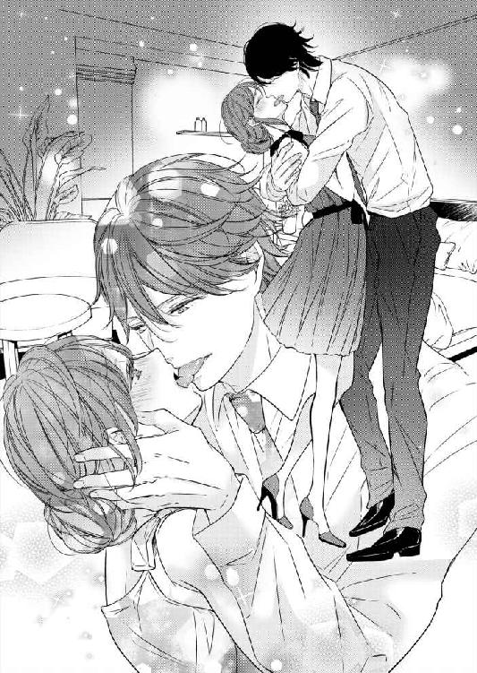
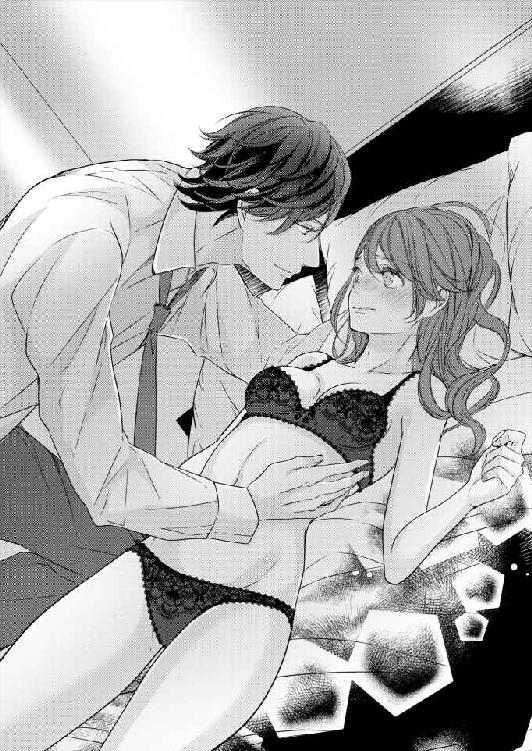
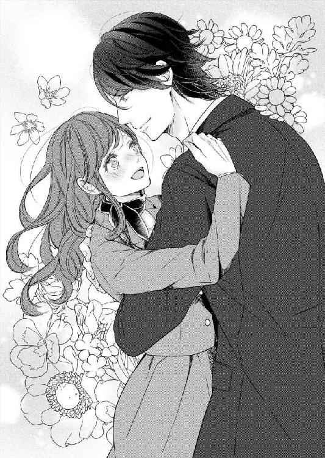

| 甘い囁きはオフィスの外で (LUNA文庫) | |
| 若菜 モモ | |
| 天海社／LUNA文庫 (2017) | |
甘い囁きはオフィスの外で
［著］若菜モモ
［イラスト］花岡美莉
一．わたしの胸を高鳴らせる人
自宅近くのカフェの隅っこで、ノートパソコンと就職情報誌を開いているわたし、根本里紗二十六歳。
気になった会社に赤ペンで丸をつけ、すぐにわかるようにと付箋をつけた就職情報誌を見ていたわたしの口から重いため息が漏れる。
なにも就職情報誌に付箋なんてつけなくていいのに......と、自分でも思ってしまうけれど、都内の大学を卒業してから秘書を四年間務めた癖はなかなか止められない。
求人誌を見ても条件のいい秘書業務なんてほとんどない。もしくは秘書といっても、総務部でのオフィスワークを兼ねた雑用が多いと、先ほど面接を受けた会社もそんなニュアンスだった。
失業して一ヶ月。再就職活動で面接を受けた会社は十七社。
自分が働きたいと思う会社じゃなくて、働かせてくれる会社を探さなくてはならないと思い始めていた。
四月に新入社員が入ってきているんだから、五月に待遇の良い求人なんてあるわけない。
まったく！ これもあのボンボン社長のせいなんだからっ！
わたしは無意識にカフェのテーブルをバンッと叩く。そのとたん、隣の席でスマホを弄っていたサラリーマンからじろりと見られてしまう。
恥ずかしくなって身を縮ませるものの、また腹立たしい思いがこみ上げてきた。肩甲骨まであるブラウンの髪を乱暴にかきたくなる。
わたしが勤めていた株式会社吉崎レザーは従業員約三百名の中小企業であるものの、明治から続く老舗のレザーや布の卸売業者だった。
入社した当時、三代目である吉崎清社長の秘書として業務に携わることになった。
結婚退職が決まっていた女性の下で二ヶ月間教えてもらってから、秘書として約四年が経った。
温厚な社長の下で働き、毎日楽しく業務に従事することができていた。それなのに......以前から不整脈を患っていた社長は、自宅のお風呂場で突然の心臓発作を起こし急逝した。
それが二ヶ月少し前のこと。
イタリアに留学中だったひとり息子吉崎慎太郎氏が帰国し、社長職のなんたるかを知らないまま跡を継ぐことになった。
同族企業のわが社では彼が社長に就任するのは当たり前のこととみなされており、職に就いてから勉強すればいいぐらいに重役たちは考えていた。
驚いたことに、吉崎慎太郎氏は一度も働いたことがなかった。
そんな社長でも彼が真面目でコツコツやるタイプの人間であれば、わたしは喜んで秘書を務めていただろう。
不本意ながら、わたしが失業した原因はまさに四代目社長のセクハラのせいだった。
彼は現在二十九歳で三年前、イタリアで知り合ったひとみさんという女性と結婚し、向こうで暮らしていた。
語学学校に通いながらレザーを勉強する名目でイタリアのローマに住み、留学と言えば聞こえはよいけれど、真面目に学校へ通わず、贅沢三昧の生活をしていたようだ。
かなりの浪費家の愚息だと先代社長が時折漏らすこともあり、この先を心配し嘆いていた。先代社長はお金の無心があるたびに、数えきれないくらい日本へ戻ってこいと息子に言っていたけれど、彼はのらりくらりとその言葉をかわし、向こうで贅沢な生活を送っていたよう。
それならお金を振り込まなければよくて、無くなれば日本に戻ってくるのではないかと、わたしは心の中で思っていた。
でも、目に入れても痛くないほど可愛がっている社長は送金してしまう。いや、社長よりも奥さまの方がしてしまうのだ。
ひとり息子に甘い先代社長夫妻がいけなかったと思う。
新社長となった彼はひと目会った瞬間から、生理的に嫌悪を抱いてしまう人だった。
長い間外国に住んでいたせいなのか、初対面での挨拶の場面でねっとりとした握手からハグをされそうになって、慌てて身を引いた。
驚くわたしに新社長は「あれ？ どうしたの？ 俺を意識しちゃった？ 外国で生活していたら当たり前なんだけどね」などと、とんでもない発言に「ここは日本です！」と声を大にして言いそうになったけれど、グッと飲み込んだ。
これから彼はわたしの上司。うまくやっていかないと。その心づもりだった。
新社長はイタリアブランドのオーダーメイドのスーツを身に着け、ビジネスシューズも秘書の給料一ヶ月分が飛んでいきそうな代物。
身なりにお金をかけて、自信過剰。
しかもいまどき流行らない髪型はてっかてかのオールバック。でも顔が童顔で似合っていない。高校生が粋がっているみたいに見えてしまうのはわたしだけ？ 二十九歳で大人の男性のはずなんだけれど。
どんな姿であれ、わたしは新社長の秘書。新社長が先代の社長のようになれるように仕事を補佐しなくてはならない。
そう意気込んでいたのだけれど、新社長のボディタッチは日を追うにつれてひどくなってきた。
通りすがりにお尻を撫でられたり、軽く叩かれたり、まだそれくらいなら我慢ができる。単なる手癖の悪い人なんだと、心に言い聞かせて。
でも数日後、業務の説明で新社長の隣に立ったとき、急に腕が腰に回って引き寄せられ、あっと思う間に膝の上に座らされていた。慌てて立ち上がろうとすると、なかなか放してくれず、力いっぱい退けると、その反動で床の上に転んでお尻を強く打った。
七センチのヒールがポッキリ折れてしまい、怒りをぶつけたいほどだった。
でも、そんなとき、新社長の態度はこちらが謝りそうになるくらい、強い態度に出る。
「こんなことで動揺するなんておかしな女だな！」
動揺するわたしがいけないの？ これってセクハラだよね？
痛むお尻を擦ることもできず、ひょこひょこと折れたヒールを気にしながらデスクを回って新社長の前に立つと、何事もなかったように『平然』という仮面を顔に張り付かせて業務説明を始める。
それからは新社長の半径一メートル以内には極力近づかないようにしていた。仕事の時はデスクを必ず挟んで。
わたしの態度がわかってきたのか、それから数日で彼の行動が変わってきた。出社すると黒革のソファに座るようになったのだ。ゆっくりコーヒーを飲みながら、新社長は隣に座れと命令してくる。
ホステスじゃないしっ！
「ほかに仕事がありますから」と断ると、「お前の声は小さいからスケジュールが聞こえない」と言われる。
言いがかりもいいところだった。以前から人と話すときはハキハキと、わかりやすいスピードを心がけていて、先代社長にも「声が小さい」など言われたことがなかった。
同じ部屋で仕事をしていると、新社長は手元の書類を見ずにわたしをじっと見ているときが頻繁にあった。
セクハラに嫌悪感を抱きながらの仕事で、朝起きると頭痛に襲われ、薬を飲まなくては治まらない状態だった。
ストレスで体調がおかしくなっているのは十分承知していたけれど、辞めるならせめて次の就職先を見つけてからにしたかった。
社長就任後、社内業務ばかりで外出することがなかったが、吉崎レザー最大の取引先である日本で有名なバッグメーカー、水嶌コーポレーションの社長に挨拶へ赴くことになった。
水嶌コーポレーションはわが社の売り上げ四十五％を占める大口取引先だ。
先代社長と水嶌コーポレーションの会長が旧友だったということもあり、取引を二十年前から始めたと聞いている。
新社長を紹介するには心もとないけれど、いつまでも挨拶しに行かないわけにはいかない。
そんな不安を胸に抱えつつも、最大の心配が水嶌コーポレーションへ向かう車の移動だった。
日本橋にあるわが社から銀座にある水嶌コーポレーションまで、電車移動でもすぐのところだけれど、残念なことに社長専用車がある。
狭い車内で新社長と後部座席にふたりっきりは、非常に危機感がある移動だった。
案の定、できる限り新社長から離れて後部座席に座ったけれど、彼はほぼ真ん中に陣取ってしまい窮屈だった。
どこのブランドなのかわからないが、大量につけた香水が鼻について乗り物酔いしそうだった。
居心地の悪さの中、車が走り出すと新社長の手がグレーのスカートから出ている太腿をさわさわと撫で始めた。
パシッと払いのけても何度も撫でてくる。
なんでパンツスーツにしてこなかったのだろう。と後悔している。
今朝も頭痛でスケジュールのことまで頭が回らず、最初に手に触れたスーツを着てきてしまったのだ。
何度も新社長の手を払っていると、今度は強引にスカートの中に手を入れてこようとした。
「やめてくださいっ」
小声でたしなめる。これくらいなら運転手に気づかれな......ふとバックミラーを見るとバチッと目と目が合った。
でも、サッと視線を逸らされる。
聞こえていたのだ。そして後部座席での攻防も。
先代社長からの五十代の運転手である山本さんは、新社長に物申すなんてことはできそうもない気弱な人だった。
「そんな短いスカートを穿いてきて俺の気を引こうとしているんだろう？」
妻がいてどうしてそんな行動ができるのだろう。
強烈な香水の匂いと共に吐き気をもよおしてしまい、払いのけていた手を口元へ持っていった隙に、新社長の指がスカートの中まで入ってきて太腿の内側を撫でられた。
「きゃっ！」
男性に触られたことはあるけれど、こんな風に嫌悪感を抱く人にセクハラされたのは初めて。
驚きとショックで乱暴に新社長の手を引っ張り出そうとすると、彼の爪がストッキングに引っかかり、あれよあれよという間に伝線していった。
「あ～あ、お前が乱暴に引っ張るから」
悪びれた風もなくのんきな口調の新社長を殴りたい衝動にかられたが、すぐに破れたストッキングに目をやる。
これでは履いていられない......。
あいにくストッキングを持っていない。替えのストッキングは会社のデスクの一番下の引き出しに入っている。
これでは水嶌コーポレーションの社長に失礼だ。わたしは見て見ぬふりをする運転手に口を開いた。
「山本さん、近くのコンビニで止めてもらえませんか？」
運転手が軽く頷いたのが見えたけれど、そこへ――。
「時間がないんだよ。脱いだままでいいだろ！ 俺の後ろにいればわからないさ」と、デリカシーのない言葉を新社長は平然とした顔で言う。
「そ、そんなことありません！」
絶対に生足ってわかるはず。
「お前は俺の言葉に従っていればいいんだよ！ 山本！ そのまま向かえ！」
それには言葉を失った。
わたしはあんたの奴隷じゃない。
フツフツと湧き上がる怒りを押し殺し、ストッキングをどうしようか考える。コンビニに寄れないのだから、見るも無残なストッキングをこのまま履いているわけにはいかない。
新社長に先に車から降りてもらい、車の中でストッキングを脱ごう。
もし先方に聞かれでもしたら、伝線したと言えばなんとかなる。恥ずかしいけれど。
そう考えて窓の外を見ると、もうすぐ水嶌コーポレーションの本店に着きそうだった。
水嶌コーポレーションは昭和に入ってから創業したバッグメーカーで、若者から年配まで幅広いデザインで今や世界の主要都市や免税店に入る会社にまで成長していた。
本店は銀座にあり、十階建ての自社ビルで一階と二階が店舗になっている。
デザイナー兼社長の水嶌貴之氏はイタリアのミラノでデザイン、縫製の修業をして二十九歳で世界中にいる従業員約千人の生活を守る立場になった。
二度ほど先代社長に付いてお会いしたことがあるけれど、同じ年で社長になった隣の男とはすべてにおいて雲泥の差のある男性だ。
高身長、顔、スタイリッシュな雰囲気の水嶌社長は世の独身女性にとって、もっとも理想の男性に違いない。受け継いだ会社を急成長させた商才もある。
現在三十三歳で大人の雰囲気のあるイケメンに、わたしだって胸を高鳴らせてしまうのだ。
水嶌社長に会えると、新社長を会わせる不安よりも嬉しさの方が大きかった。
でも......。
わたしはもう一度敗れたストッキングを見て、心の中でため息を吐いた。
気づかないでくれるといいのだけど......。
車は水嶌コーポレーションの本店前に到着した。
「社長、申し訳ありませんが先に降りてください。わたしは......脱いでから」
なんだか脱ぐなんて言葉を言うのは恥ずかしい。
「そんなの誰の前で脱いだっていいだろ！ 減るもんじゃないしな！」
ふんっ！ と鼻息荒くして、外から山本さんが開けたドアから降りる。
早く次の就職先を見つけなきゃ。もうこの最低な男の下で働きたくない。なにを言われても無視よ！ 無視！
悔しさに唇を噛みしめながら、ストッキングを手早く脱ぐと、バッグの底の方に入れてドアを開けた。
わたしが車から降りると新社長が近づいてきて、じろじろと舐めるような視線で素肌が露出した足を見る。
スーツのスカートが膝丈だから、立ってしまえばそんな新社長の視線は無視できる。
「こちらです」
わたしは新社長を案内しながら、店舗一階入り口へ進む。
「いらっしゃいませ」
黒いスーツ姿で首に水色の地に幾何学模様の入ったスカーフを巻いた洗練された女性店員が近づいてきた。
どうか彼女たちの目に生足が留まりませんように。
「吉崎レザーの者ですが、水嶌社長と約束しておりまして」
新社長は店内に入るなり、ウロウロとバッグの方へ近づくと手に取って見ている。
お願いだから、じっとしていてください。
まるで小さな子供のようで、恥ずかしくなり顔が熱くなる。
「どうぞ、この奥のエレベーターに乗って十階で降りてください」
店員は内線で確認を取ったあと、にこやかにエレベーターの方を示す。
「ありがとうございます。社長、こちらです！」
わたしが声をかけると新社長は適当な場所にバッグを置き、エレベーターに向かう。マナーのない新社長で、穴があったら入りたい気分だった。
わたしは女性店員に小さく頭を下げると、新社長を追った。
エレベーターの中にふたりきり。気づまりな空間だ。そこへいきなり新社長の腕がわたしの両肩を掴んで壁に押しつけられる。
「なにをするんですかっ！」
新社長はなにも言わずに顔を近づけ、キスをしようとする。強い力で押しつけられて身動きができないわたしができるのは顔を背けることだけ。
新社長の唇が頬に当たり、背筋にゾクリと悪寒が走る。
「やめてくださいっ！」
そのとき、「チン！」と音がして、エレベーターが十階に到着したことを知らせた。
「チッ！ やけに速いエレベーターだな」
新社長は苛立たしげに舌打ちしてから、押さえつけていた手を離した。
そこでエレベーターが開く。
今のせいで心臓が荒く波打つのを静めることもできずにエレベーターを降りると、水嶌社長の秘書、秋元拓郎氏がフロアで待っていた。
「お待ちしておりました」
わたしは動揺を隠しきれず、ただ頭を下げることしかできなかった。
身長は男性の平均ぐらいだけど、黒っぽいスーツにノンフレームのメガネ。できる秘書そのものといった雰囲気の三十代くらいの男性だ。
新社長の秋元さんを見る目つきは「お前は誰だ？」といった風で、わたしは慌てて紹介する。
「しゃ、社長、水嶌社長の秘書の秋元さまです」
「へぇー男の秘書なんているんだ」
秘書の仕事は男がやるもんじゃないというニュアンスを含んだ言葉に、秋元さんは顔色ひとつ変えずに名刺を新社長に差し出す。
「秋元と申します」
新社長は秋元さんの名刺をひったくるように受け取った。
「どうぞ、こちらでございます」
新社長の態度にも変わらず、秋元さんは社長室へ案内するため歩き始める。
「社長、失礼のないようにお願いします」
前を歩く秋元さんに聞こえないよう、小声で新社長に囁く。
「小言か？ うるせえな！」
この言葉が一メートルほど先を歩く秋元さんに聞こえないことを祈るばかり。
秋元さんは『社長室』と書かれているプレートのある重厚なドアをノックすると開ける。
「吉崎社長、根本さん、どうぞお入りください」
新社長に続いて中に入ると、ちょうど水嶌社長がこちらに歩いてくるところだった。スーツの上着を羽織りながら。
涼しげな目元に高い鼻梁、端正な顔立ちはまさにイケメン。身長も一八〇センチは軽く超えていて、ビジネススーツの上からでもわかる鍛えられた体躯。
記憶通りにステキな水嶌社長にうっとりしそうになるけれど、新社長のマナーや言動の不安が大きく、気持ちを引き締めなければと思う。
新社長と水嶌社長が対面すると、わたしの心臓は不安でドクドクと大きく打った。
「吉崎レザー貿易の吉崎慎太郎です」
新社長は名刺を出し、意外にもまともに挨拶してホッと安堵する。
「水嶌です。どうぞ、おかけください」
名刺交換を済ませるとデザイン性の高い、座り心地の良さそうな白いレザーのソファを勧められる。
新社長は素直に座った。
なにかしでかすのではないだろうかと、心配で仕方ない。
どうやら新社長は弱者に強く、強者には従うタイプのようだ。一瞬にして見極めたのだろうか？
わたしは胸を撫で下ろした。
ふいに視線を感じて見ると、水嶌社長の色素の薄いブラウンの瞳とぶつかる。目と目が合っただけで、わたしは恥じらう乙女みたいに顔が赤くなりそうだった。
「根本さんもどうぞおかけください」
二回しか会っていないのに、わたしの名前を憶えていてくれたとは驚きだった。
「ありがとうございます」
本当は座りたくなかった。座ればスカートは上がり、ストッキングを履いていないことがわかってしまいそうで。
案の定、さりげなく新社長から少し離れて座ると、ひとりがけのソファに腰を下ろした水嶌社長の視線がわたしの足に止まる。
バッグを膝の上に置いていたけれど、やはりわかってしまったのだろう。他の男性にじっと見られたらいやらしい人、見ないで、と思ってしまうが、水嶌社長の視線は不思議と嫌悪を感じない。むしろ秘書としてどうかと思われるのが怖い。
「こ、こんな格好で申し訳ありません。伝線して――」
先に謝っておいた方がいいと口を開いた。
そこへ秋元さんがコーヒーを運んできた。
「それでは不便でしょう。用意させます」
微笑んだ水嶌社長は、秋元さんに視線を向ける。
「いいえ！ 大丈夫ですから。失礼で申し訳ないのですが......」
焙煎されたばかりのような香り高いコーヒーの入ったカップを置いた秋元さんが、社長室を出て行く。
紳士的な態度がすぐさまできる水嶌社長の爪の垢を煎じて、隣の男に飲ませてやりたい。コンビニに寄れば恥ずかしい思いをしないで済んだのに......。
新社長を見ると、彼はソファにふんぞり返るようにしてコーヒーを一口飲んでから、口を開いた。
「とても座り心地のいいソファですね」
わたしは新社長の性格をわかってしまったから、これはほめ言葉じゃないと悟る。
『これはうちのレザーじゃないですね』と、言いたいのだろう。ソファのレザーまでわが社を使う、使わないは自由なのに。それにこのソファは海外のブランドもの。
「さすが吉崎社長はイタリアに留学されていたことだけありますね。先代から語学とレザーの勉強をなさっておられたと聞いていました。ご推察の通り、このソファはアゴスティーノのものです」
水嶌社長の真意はわからない。けれど、新社長の顔が少し赤くなった気がした。
「い、いや、レザーの勉強は少しだけですよ」
アゴスティーノはイタリアのソファブランドでも老舗で、丁寧な造りで一生ものと言われている。使えば使うほど革の手触りや艶が出てくるとセレブでは人気のブランド。
このソファひとつだけでも数百万円はくだらないだろう。と、レザーに精通していた先代社長が教えてくれたのをわたしは思い出した。
「根本さん、コーヒーをどうぞ」
水嶌社長はわたしにコーヒーを勧めてくれる。勧められる前に飲んだ新社長のカップはすでに半分なくなっている。
「......いただきます」
ソーサーに添えてあるミルクと砂糖に手をつけないまま、カップを口にあてて飲む。
水嶌社長の視線が自分に向けられているようで落ち着かない気分だ。
「水嶌社長も仕方なく跡を継いだんですか？」
新社長の突拍子もない言葉に驚いてカップを乱暴に置いてしまい、カシャンと音をたてる。
「も、申し訳ありません......」
小さく失礼を謝るも、新社長の無神経な言動にハラハラしどおしだ。
もうっ、なにを言ってるのっ！
バカな新社長の口を塞ぎたい。もちろんそんなことはできないけれど......。
わたしはこぶしをぎゅっと握った。そこで空気の読めない発言にも表情を変えない水嶌社長が口を開く。
「吉崎社長は仕方なく先代社長が残した会社を継いだんですか？」
「いろいろと自由がなくなって。面倒なだけですよ。イタリアの生活が懐かしい」
本音を言った新社長は、ソファにふんぞり返った。
お願いですから、変なことを言わないで。
恥ずかしさでわたしの顔は赤くなるどころか、青くなっているに違いない。
そこへドアがノックされ、コンビニの袋を手にした秋元さんが姿を見せた。
「社長、こちらを」
秋元さんは水嶌社長に近づくと、コンビニの袋ごと渡す。
「根本さん、これをどうぞ。秋元くん案内を頼む」
ストッキングが入っているコンビニ袋を差し出され、わたしはためらいながら受け取ると、即座に立ち上がった。
新社長はなにも言わないけれど、苛立っているだろう。
「お手数おかけして申し訳ありません。お言葉に甘えて使わせていただきます」
もちろんこの代金は支払うつもりだ。
水嶌社長に頭を下げたわたしはバッグとコンビニ袋を持って、秋元さんのあとを付いて行く。
秋元さんに案内されたのは社長室の隣の部屋だった。どうやら秘書室のようだ。
「レストルームの方がよかったでしょうか？」
「いいえ。こちらでかまいません」
「内側から鍵がかかりますから」
「ありがとうございます」
自分の執務室を貸して秋元さんは出て行った。
ドアが閉まると、鍵をかけてコンビニの袋からストッキングを出す。値段はストッキングのパッケージに書かれてあってホッとした。値段がわかった方がお金を返しやすい。
急いでベージュ色のストッキングを履く。ちょうどいい色味のベージュで、感心してしまう。あ、でも秋元さんじゃなくて店員さんが買いに行ったのかもしれない。
ストッキングを履き終えると、スカートがめくれていないか確かめる。
よし！ 問題なし。
バッグを開けて財布からストッキングの代金を出してから、秘書室を出た。
隣の社長室をノックするとすぐに内側からドアが開き、ほぼ同時に新社長が出てくる。
「帰るぞ！」
えっ？ もう帰る？
苛立ったような顔つきの新社長から、後ろに立っている水嶌社長に視線を向ける。水嶌社長は黙ったまま新社長を見ていた。
わたしが席を外しているうちになにかあったんだよね......？
困惑しているうち、新社長はエレベーターの方へどんどん行ってしまう。
「あ、あの......」
新社長の不機嫌がどうしてなのかわからず、言葉に詰まる。
「彼を教育するのは大変だな。気をつけてお帰りください」
水嶌社長はうんざりしたように、短く鼻で笑った。
彼を教育？
「なにか失礼があったのですね？ 申し訳ありません。失礼します」
新社長がなにかやらかしたのかもしれない。わたしは恥ずかしくて水嶌社長の顔がまともに見られず頭を下げる。
「早くしろ！」
新社長の強い口調に、思わず肩を跳ねらせてしまう。もう一度水嶌社長へお辞儀をすると早足で向かう。
エレベーターの横で秋元さんが立っていた。
「ストッキングありがとうございました」
ストッキングの代金を渡そうとすると秋元さんは受け取ろうとしない。
「根本！ なにをしているんだ！」
新社長の怒りを爆発させるような口調に、秋元さんが早く乗るようにジェスチャーをする。
「申し訳ありません。ありがとうございました！」
わたしは秋元さんに頭を下げると、最悪な雰囲気のエレベーターに乗り込んだ。
「まったく！ 嫌味な奴だな！ お前もトロいんだよ！」
新社長が吐き捨てるように言う。
エレベーターが閉まったあとでよかった。秋元さんに新社長の暴言を聞かれずに愁眉を開く。だけど、横にいる男に関してそれどころじゃない。これほど機嫌が悪いのを、見たことがないからだ。
新社長から距離を取りながら、早く一階に着いてほしいと心の中で祈る。
彼は苛立たしさが先に立ちセクハラどころじゃないようで、すごい形相のまま一階に到着した。
わたしが席を外している間、なにがあったかまだわからないけど、取引先しかもわが社の取引の約半分を占める会社の社長の機嫌を損ねたことを、なんとも思わないのだろうか。
水嶌社長の表情はなにを考えているのかわからなかったけれど、会社に戻ったら電話をかけて謝らなければ。下手すると取引停止をしかねない事態かもしれない。
不機嫌そのものの新社長は店内をドスドス歩き、水嶌コーポレーションの本社ビルを出た。
新社長がドアを出てからわたしは振り返り、誰ともなく頭を下げて車へ急いだ。
山本さんが車を出すか出さないうちに、新社長は暴言を吐き始めた。
「あいつは生意気だ！」
「あいつとは......？」
もちろん水嶌社長だと思うけれど、念のためおそるおそる聞いてみる。
「いきなりイタリア語を話しやがった！ 俗物だな。自分も留学していたから自慢したいんだ！」
「イタリア語でなんて言われたんですか？」
「そんなの知るかよ！」
そんなの知るかよって......もしかしたら水嶌社長のイタリア語がわからなかったの？
「それに説教しやがった！」
新社長はフンと鼻をならし、足をバタバタさせる。
はぁ......これじゃあ小さな子供と一緒。この先が思いやられる。
怒りのあまり、セクハラされずに済んだけれど......。
会社に戻り新社長が席を外しているうちに受話器を上げた。水嶌社長へ失礼したお詫びをするために。
番号をプッシュしようとしたところへ新社長が戻ってきて、デスクにいるわたしのもとへ不機嫌そうに近づいてくる。
わたしの横へ立つと手にしていた受話器を取り上げて乱暴に置く。それからわたしの手首を強く掴んで立たせた。
「しゃ、社長、どうなさったんですか!?」
両手首を掴まれ壁に身体を押しつけられて、わたしの目が大きく見開く。
「社長！ 止めてください！」
「あの男にへらへらしやがって」
「なにをおっしゃっているのかわかりません。手を放してください」
身じろいでなんとか新社長から逃れようとするけれど、掴む力が強くて囚われたままだ。
「あんな男にだったら股を簡単に開くのか？ 進んでセックスしようと誘うのか!?」
新社長はわたしの足の間に片足を強引に入れてきて、ますます自由がきかなくなる。
「なにを言ってるんですかっ！ 手を放してください！」
必死に腕を動かそうとするも、すごい力で万歳する格好で押さえられ敵わない。
新社長の唇がわたしの唇に近づいてくる。
「っ！ いやっ！」
顔をすんでのところで逸らすと、頬と首の間にねっとりした唇が当たる。その瞬間、気持ち悪くて背筋に寒気が走った。
「逃げるな！」
左手が放されたかと思ったら、スーツの上から左胸を鷲掴みされた。
「いやっ!! やめてくださいっ！」
「くそっ、黙れ！ お前は俺に犯されればいいんだよ！」
犯される？ そんなバカなことっ！
新社長の腕の中でどうにか逃げようと暴れていると、突然わたしとは違う女性の悲鳴がして動きが止まる。
「慎太郎！ いったいなにをしているのっ!?」
「ひ！ ひとみっ！」
新社長はわたしから慌てて離れ、衝撃を受けてワナワナ震える女性に近づく。
彼が慌てて近づく女性の名前はひとみさん。まだ一度も会ったことのない新社長の奥さまだった。
「この女が誘ってきたんだ！」
新社長の奥さまへの弁解に、わたしはあんぐり口を開けそうになった。
本当に腐った男！
まさかそんな話、信じないだろうと思っていたら、奥さまはわたしに近づいてきて、手を振り上げた。
バシッ！
わたしの頬は奥さまに平手打ちされていた。
「いたっ......」
背も高く、体格がよい奥さまの平手打ちはかなり痛かった。
もうっ！ どうしてわたしが叩かれなくちゃならないのっ!?
「人の旦那を誘惑するなんて、なんて女なのよっ！」
「誘惑なんてしていません！ わたしのほうが被害者です！」
叩かれた頬が痛いのと、犯されかけた憤りと、抑えていた感情が爆発しそうだった。
奥さまの後ろで小さくなっているような新社長が目に入り、もう二度と会いたくない気持ちが占める。
デスクの一番下の引き出しからバッグを出すと、わたしをきつい目で睨んでいる奥さまの横を通り過ぎ、新社長に近づいた。
「な、なんだよ」
わたしの形相が怖かったのか、新社長はどもる。
「非常識で甘やかされた男の下で働くなんてまっぴらよ！ このセクハラ男！」
わたしは新社長に言い放つと、驚いている顔に平手打ちをした。
ビシャン！
手が骨折したかと思うほど、痛かった。でも、新社長も痛いに違いない。
茫然とした表情で、わたしが叩いた頬に手をやっている。
「仕事や人に対する考えを改めないと、会社が潰れるんだから！」
それだけ言ってドアへ向かう。そのときのわたしの気持ちはスッキリしていた。新社長の間が抜けた顔も見られたし。
そして、現在に至る......なんだけど......。
こんなに就職先が見つからないなんて思いもしなかった......。
就職情報誌を広げたテーブルに顔を突っ伏したくなった。
あのときのことを思い出すだけで、イライラしてしまうし、転職先を決めてから辞めればよかったのにと、後悔も少しある。わたしは悪くない。パワハラで訴えたいくらいだ。
そして吉崎レザーを辞めたことで、水嶌さんに会うことがなくなってしまった。
仕事上、数回しか会ったことがなかったけれど......。
「会いたいな......」
気分直しに水を飲んでいると、スマホがメールを受信した。
メールを開くと、高校のクラスメイトからで、今週の土曜日にあるクラス会の場所を再確認するものだった。高校を卒業して二十歳のときにクラス会があったきりで、六年ぶりにみんなに会う。楽しみだったクラス会だけど、失業した今となっては憂鬱なイベントだ。
深いため息を吐くと、ノートパソコンを閉じた。
二．嘘から始まった恋
クラス会の会場は土曜日の十七時から六本木にある最高級ホテルのレストラン。
高校の同級生は四十名だけど、諸事情で来られない人もいるので、レストランのテラスと室内の一角でやることになったらしい。
なんでもこのホテルのイタリアンは最高らしいから。
最高なだけに、会費が一万五千円。失業中のわたしにとって痛い出費だ。
以前、先代の社長とパーティーに出席したときに購入したグレーのワンピースがあるから、クラス会のために買わずにすんだ。
わたしの持っているおしゃれ着では一番高くついたものだ。
胸の谷間が見えないくらいのスクエアカットのＡラインワンピース。袖ぐりとウエストの前で結ぶリボンがブラックで、上品なスタイル。バッグとパンプスも同じブラックにして完成。
支度に満足したものの、テンションは上がらない。みんなに会うのが憂鬱なのだ。特に近況報告が。
これ以上家にいると遅刻をしてしまいそうなところで、マンションを出た。
今回の参加者は十九名。子供が生まれたばかりとか、結婚してご主人の転勤で東京にいないなど、出席できない人が多かった。しかも今日は担任の小林佳代子先生も欠席。
六年ぶりの再会をわかち合う、にぎやかな輪からわたしはそっと離れる。
最近はストレスばかりで、お酒に弱いとわかっていても飲みたくなってしまう。お酒は弱いけれど、特に白ワインが好き。
ブッフェスタイルで真っ白なテーブルクロスがかかった長いテーブルの上に用意されている白ワインのグラスに手が伸びる。
ひとりその場で白ワインを飲んでいると、中高と一緒でなんでも話ができる富永博美、旧姓松岡が近づいてきた。彼女は大学在学中に三十歳のサラリーマンとデキ婚をして、六歳と四歳の男の子のママになっている。明るくおおらかな彼女はグラスを口に運んでいるわたしの腕をバシッと叩く。
「なにひとりで飲んでいるのよ」
博美はビールをグラスに注いでゴクッと喉に流し込み、「うまいっ」と言ってサーモンとクリームチーズのカナッペを口に放り込む。
「うん。さいこー！ 里紗も食べてみなよ」
「子供たちは実家？」
久しぶりのひとりだけのお出かけに博美のテンションは高い。
「そうなの。本当はパパだったんだけどね？ 急な出張が入っちゃって。お母さんに頼んじゃった。なんなら朝まで付き合うよ？」
博美はわたしが不本意で仕事を辞めたことを知っているから、慰めてくれているのだろう。
今日はとことん博美に付き合ってもらおうかな。
ふたりで博美の子供のことなどを話していると、先ほど話をしていたグループとは別の同級生たちがやって来た。
「せっかくの同窓会なのに、ふたりっきりでなにを話しているの？」
そう聞くのは、なぜか昔からわたしにライバル意識を持っていた寺川安奈。
仲がよいわけじゃないのに、どうして話しかけてくるの？
すぐにその理由がわかった。
「安奈、結婚するのよ。婚約者は一流商社に勤めているんだって。商社って年収がいいのよね。羨ましいわよね～」
そう言うのは、寺川さんといつも一緒にいた三島麻友だ。
「麻友、わたし年収で選んだんじゃないわ。彼、わたしにとっても甘くて優しいの。それにカッコいいのよ。その分、女性にモテるから心配なんだけどね」
ブラウンの巻き毛を整えるように手をやり、左手の薬指の大きな一粒ダイヤのエンゲージリングを誇張するように動かす。
寺川さんはわたしに自慢したいのだ。
正直、羨ましい......。
「根本さん、結婚の予定は？ それとも彼氏いないの？」
寺川さんがアイラインをくっきりと引いた目で、チラリとわたしの左手を見る。
「え？ わたしは――」
「里紗にいないはずないでしょう！」
なんとなく悔しいけど素直にいないと、答えようとしたとき、隣にいた博美が先に答えてギョッとなる。
「ひ、博美っ？」
困惑して博美のツーピースのジャケットの裾を引っ張ると、彼女はかまわずに続ける。
「今日だってこのあとデートなのよね？ ここまで迎えに来てくれるんでしょ？」
博美は彼女たちからわたしを見てにっこり笑う。その熱の入った目は「嘘を突き通しなさいよ」と言っているようだ。
高校のときから博美は寺川さんの自慢気で高飛車なところが嫌いだった。
「え？ あ、ま、まあ......間に合ったらって......」
博美の視線につられて嘘を言ってしまってから、思いっきりため息をつきたくなる。
もうっ！ わたしったらなに言っちゃってるのっ。
「里紗の彼に会ったことがあるけど、そりゃもう極上のオトコよ」
博美の口から嘘がポンポン出てくる。救いなのは「結婚」の二文字が出てこないことだ。
「あら、そうなの？ 自慢できるほどのステキな彼氏を見てみたいものだわ。ねえ？ 安奈」
三島さんは嘘だと思っているのか、ふふふっと笑いながら寺川さんに同意を求める。
「そんな極上のオトコがいるもんですか。迎えに来てくれるんなら、絶対に見なきゃね！」
寺川さんもバカにしたように笑う。
なんで嘘をついてしまったのか......心の中で博美を恨む。
極上のオトコが迎えに来るわけがないのだ。あとで恥をかくしかないか......。
わたしは愛想笑いを浮かべて、白ワインをゴクリとあおった。
ふたりは「楽しみだわ～」なんて言いながら、他のグループに向かった。そこでもあの高そうな指輪を自慢するのだろう。そう思ってから、そんなことを考えてしまう自分に嫌気がさした。
「里紗、ごめん」
博美が大きくため息を吐きながら謝る。
「彼女たちを見ていたら悔しくって。わたしはごく普通の結婚だから」
ごく普通の結婚が一番いいと思う。博美は幸せそうで、わたしも彼女みたいな生活を送りたいと前から思っていた。
「ううん。いいの。同窓会が解散したら、彼女たちに彼は仕事で遅くなるみたいって言うから」
わたしは笑って落ち込みそうになっている博美を励ました。
「ほらっ！ なにそんな顔をしてるのよ。はいはい、飲んで！」
博美の背中をポンと叩き、ビールのグラスを手に持たせた。
「わたしの失業に乾杯しよ！」
白ワインのせいか、妙に明るい自分がいた。
「博美、酔っぱらっちゃったみたい」
同窓会はお開き。飲み過ぎを自覚したわたしだった。
「そんなことを言う余裕があるってことは、まだまだ飲み足りない証拠よ。二次会行こう！ 二次会っ！」
博美もほどよくビールが回って、ニコニコしている。
そこへ帰り支度の済ませた寺川さんと三島さんがやって来た。
絶対に一緒になりたくなかったのに、他の同窓生ともどもエレベーターに乗り込んだ。
「彼氏、お迎えに来るんでしょ。どこで待ち合わせなの？ ロビーかしら？」
寺川さんがブランド物の華奢な腕時計を見て、わたしに聞いてくる。
「あ！ まだ仕事が終わらなくてもう少し遅くなるって！ ね？ 里紗」
嘘をつくのが苦手なわたしの代わりに博美が言ってくれる。
「えー根本さんったら、本当に彼氏いるの？」
寺川さんが疑いの目をわたしに向ける。
「もしかしたら嘘だったり？ 安奈が幸せだからって？」
三島さんの鋭い突っ込みにタジタジだ。
「う、嘘なんてついているわけないでしょ。本当に遅くなるって連絡があったの」
わたしにだってプライドはある。また嘘を重ねてしまった......でも、彼女たちとは当分会わないのだから大丈夫なはず。
罪悪感を抱えていると、エレベーターは小気味よい音をたてて一階で止まった。
「根本さんの彼氏が見られなくて、ほーんとざんねーん」
寺川さんと三島さんはクスクスと笑って先に降りた。彼女たちと離れられてホッとする。
「行こうか」
わたしは博美に苦笑いを浮かべて、ラウンジのあるロビーを歩く。ふと前を歩く寺川さんたちを見ると、ホテルの入り口に立つ男性に注目していた。
スーツの袖を少しずらして腕時計を見る男性に、ふたりは「見て見て」と言うように彼を見ながら手を動かしている。
芸能人でもいるの？
彼女たちが惹かれる男性を見ようと、わたしは少し近づく。ちょうど男性から七メートルくらいほどのところだ。
「あ......」
博美もカッコいい男性に気づいて、わたしを覗き込む。
「なに？ あの人と知り合い？」
グイグイと懐に入るように聞いてくる博美に、思わず名前を言っていた。
「水嶌さん......」
こんなところで会うなんて......。
「里紗！ ツイてるよ！ うん！ 彼に結婚指輪は無し！ プラス極上のオトコ！」
目ざとく左の薬指まで見た博美はそれだけ言うと、驚くことに水嶌さんのもとへつかつか歩き始めた。
「博美っ！」
後を追ったけれど、時は遅し......。
「水嶌さん！ わたし、里紗の親友の富永博美です！」
博美は堂々と自己紹介をしていた。
飲み過ぎだよ......。
気になるのは寺川さんたちで、見るとわたしたちに注目している。
「里紗？」
水嶌さんは一瞬眉を顰めたけれど、博美の後ろのわたしを見てにっこり笑った。
「里紗」
この状況を察してくれたのだろうか。彼は今まで見たこともない優しい笑みを浮かべる。
「水嶌さん......」
戸惑うわたしに博美が助け舟を出す。いや、もとはといえば、博美のせいなんですけど。
「お仕事で遅くなるって里紗が言っていたので、お会いできてよかったです」
寺川さんたちに背を向ける格好で、博美は一生懸命水嶌さんに目くばせしている。
水嶌さんは博美越しに寺川さんたち、そしてわたしに視線を向けた。
どうしよう......そう思ったとき、水嶌さんがわたしの方に近づいてきた。
「思ったより道が空いていたんだ。待たせなくてよかった」
水嶌さんは通る声でそう言って、わたしを抱き寄せた。
「み、水嶌さんっ」
「いつになったら照れなくなるのかな？ これでもキスはやめておいてあげているんだよ」
水嶌さんは魅力的な顔でわたしに微笑んだ。
イタリアで生活しただけあって、ハグも女性の扱いもさりげない。惚けてしまいそうになる。
「根本さんっ！ 素敵な彼がいるって本当だったのね～。てっきり嘘かと思ったんですよ？」
前者はわたしに、後者は水嶌さんに向けられて寺川さんが言ったものだ。
「失礼ですが、ご職業は......？」
三島さんがずけずけと口にする。
本当に失礼だよ......。
水嶌さんはポケットから名刺入れを出して、三人にビジネスマンらしく手渡す。
彼女たちは名刺に目を落とす。
「あの〝mizushima〟バッグの社長さんなんですかっ!?」
三島さんは目を丸くして驚きに声を上げた。博美はかろうじて声を出さないようにしているみたいだけど呆気に取られている。寺川さんは水嶌さんを自分の婚約者より下に見ていたようで、顔を赤くしてなにも言えないようだ。
「ええ。もしわが社のバッグをご用命の際は里紗に言ってください。割引させていただきますよ」
水嶌さんはみんなに名刺を渡したあと、さりげなくわたしの腰に腕を回していた。
女性に慣れているんだなと、感心してしまう。こんなことを人前でされたことは一度もないけれど、不快どころか嬉しいのは否めない。
「里紗、そろそろ行こうか」
「え？ あ、う、うん。博美、またね！」
「メールするからね！」
博美は楽しそうにニヤニヤした笑みをわたしに送った。今日中にメールが来るだろうな。
水嶌さんは出口とは反対のロビーの方向へ歩き始めた。腰に手を置かれているわたしも同じように足が動く。
「水嶌さん、状況を察してくださり、ありがとうございました」
エレベーターホールまで進み、完全に寺川さんたちから見えないところで、水嶌さんから離れると頭を深く下げた。
「君たちの見栄っ張り大会に参加できて嬉しいよ」
水嶌さんは口の端を少し上げて冷ややかな笑みを浮かべる。
その笑みはまるで「女なんてバカな生き物だな」みたいに言われているようで、恥ずかしくなった。
「同窓会なんてそんなもんです。ご迷惑をおかけしてすみませんでした。失礼します」
少しでも早く彼から離れたい。水嶌さんといると劣弱意識を覚えてしまう。
「待てよ」
歩こうとしたわたしの腕が掴まれる。
「俺を巻き込んでおいて、ありがとうございました。さようならは、ないだろう？」
「えっ？」
水嶌さんの言っている意味がわからない。ううん。たったそれだけの言葉で帰るのか、と言っているのはわかるけれど、わたしはどうしたらいいのか困って水嶌さんを見つめる。
「あの......？」
困惑していると、水嶌さんはちょうど来たエレベーターにわたしを乗せた。
「えっ？ いったいどこへっ!?」
「ホテルの部屋でも連れ込まれると思っているのか？ 安心しろ、バーに行くだけだ」
そう言って、バーのある最上階のボタンを長い指で押した。
「バーって、水嶌さんは用事があるんじゃないですか？」
土曜日に最高級ホテルにいるってことは、恋人と会うことしか頭に浮かばない。
高速エレベーターはグングン上へ上がっていく。
「わたしと一緒にいるところを彼女さんに見られたらマズいんじゃないでしょうか？」
水嶌さんに誘われて嬉しいが、すんなり付いて行くのは、軽い女に見られそうだと思った。
それに、それとなく水嶌さんに彼女がいるのか、確かめているわたしがいた。
「恋人とホテルで会うと思っているのか？ 食事をして酒を飲んで、部屋でセックスをする。君の頭は花畑だな」
またバカにしたような笑みになる水嶌さんに、新社長が腹を立てたのもわかる気がしてきた。
頭の中がお花畑って......。
「イタリアの取引先と食事をしながらミーティングをしたところだ。彼らがここに泊まっているんでね。それに俺も今――」
彼女がいるのか、いないのか......。
「ミーティング......でも、わたしとじゃなくて恋人と飲んだ方が数倍楽しいと思います」
白ワインをけっこう飲んでしまったのに、あと少しで酔っぱらってしまいそうだ。
「全力で拒否されると、誘いがいがある」
エレベーターは小気味よい音をたてて最上階に到着した。
「では先ほどのお礼に、ごちそうさせてください」
聞いているのか、いないのか、水嶌さんはなにも言わずに手をわたしの背にあてた。そして高級感のある、わたしひとりだったら絶対に入ろうとは思わない店に進まされる。
入り口でブラックフォーマルに身を包み、口髭のある五十代ぐらいのダンディと言うのがピッタリな男性に出迎えられる。
「いらっしゃいませ。水嶌さま」
名前を呼ばれるってことは常連さんなのだろう。彼はこのホテルをよく使っているよう。
店内は照明を落としたライトと、各テーブルにあるロウソクの灯りだけでほんのり薄暗い。
こういった落ち着いた雰囲気の店は初めてで、ドキドキしてしまう。仕事では禁酒していた社長だったので、接待でも一度もない。
わたしたちは東京タワーが見える席へ案内された。
店の男性が椅子を引こうとすると、水嶌さんは遮るように軽く手をあげる。
口元に笑みを浮かべた水嶌さんに椅子を引かれ、わたしは座らされる。内心、彼のエスコートに胸が高鳴り、平常心を保つのが難しい。
メニューがテーブルに置かれており、席を案内した男性が開いてわたしに見せる。
水嶌さんはわたしにはさっぱりわからない銘柄のウイスキーのロックを頼む。水嶌さんの会話で、男性が支配人だとわかった。
「君は？」
「マ、マティーニで......」
メニューの一番上にあって、目に入ったカクテルを言っていた。
実際に飲んだことはなくて、アルコール度数が強くなければいいと、心の中で去っていく支配人の背中を見て思った。
なにを話していいのか困って、窓の外のキラキラ光る夜景に視線を向けると水嶌さんが口を開く。
「あのボンボンの扱いは大変だな」
「あのボンボン......あ！ 新社長ですね。あのときは失礼をしたようで、申し訳ありませんでした。でも、あの日辞めたのでその後のことはわからないんです」
「辞めた？ 社長秘書を辞める理由がわからないな」
水嶌さんは微かに驚いた顔でわたしを見つめる。
「たしかにお給料も良くて、仕事も好きだったんですが......」
「なるほど。セクハラか」
今度はわたしが目を丸くして水嶌さんを見る番だ。
「どうしてわかったんですか......？」
「ボンボンの君を見る目つきがね。いかにも飢えた目だった」
「飢えた目......でも、奥さまがいるんですよ？ そんな目をしていただなんて......」
不快な目つきを向けられるのはわかっていたけれど、それが飢えていた目だとは気づかなかった。
「あの日、御社から戻ると彼が襲いかかってきたんです。そこへ奥さまがいらして。わたしが誘ったようになってしまい、誤解されて......腹が立って、彼をひっぱたいてから辞めたんです」
水嶌さんは堪えていた笑いが止まらなくなり、ふき出した。
「君があのボンボンをひっぱたいた？ 見た目より気が強いんだな」
「笑い事じゃないです。今は会社を辞めたことを後悔しているんですから」
顔をひっぱたいて啖呵を切ったときはスッキリしたけれど、今のこの状況を考えたら重いため息が出てくる。
「ああいう男は妻がいても浮気するだろうな。ひとりの女じゃ我慢できないタイプだな」
「水嶌さんはひとりの女性で大丈夫なんですか？」
「もちろん」
水嶌さんは当たり前だろうというように、自信ありげに頷くけど、疑いを持ってしまう。というのも、これだけのセレブで十人中九人がカッコいいと言われそうな人であれば女性たちが放っておかないと思うから。
彼が誘うというよりは誘われる方。
綺麗な女性から誘惑されれば、美味しくいただいてしまいそうな印象を受ける。
「信じていないな？」
「それは......ご想像にお任せします」
彼の疑う目がなんだかおもしろくてクスッと笑った。思ったより同窓会で飲んだワインが効いているのかも。
「いいさ。もう君が俺をどう思っているのかわかったから」
「素敵だと思っていますよ？ あっ！」
バカ正直に言葉が出てしまって、慌てて手を口にやる。
そんなわたしに水嶌さんは不敵な笑みを、端正な顔に浮かべた。
「それはありがとう。君の本当の気持ちだと受け止めておこう」
「言われ慣れているでしょうから、受け止めておかなくていいですっ」
頬が熱くなって飲み物が欲しくなったとき、オーダーしたマティーニがわたしの目の前に置かれた。
水嶌さんはウイスキーのロック。ロックグラスの中の大きなまん丸の氷が綺麗でずっと見ていたくなる。
フルーツとチーズの盛り合わせも頼んでくれていたようで、美しくカットされたフルーツもテーブルの上に乗った。
「仕事は？ それともゆっくり休んでから？」
彼はウイスキーのロックを口にすると、くつろいだ様子で椅子の背もたれに身体を預ける。
「ゆっくり休む余裕なんてないです。もう一ヶ月も経ってしまっていますし......」
そんな余裕はないのに就職先が見つからない。そのことを思い出して、深いため息が漏れた。
「その様子だと、まだ見つかっていないのか。それで後悔を？」
「まぁ......そんなところです」
わたしは言葉を濁した。
せっかく極上の男性と飲んでいるのだから、就職活動のことでくよくよするのはもったいない。
持ち手が華奢なグラスに入ったマティーニを一口飲むと、思ったより強くてかあーっとした熱さが喉を通っていく。
このままではマティーニと目の前の極上の男性にあてられて、酔ってしまいそうだ。
酔わないように、一口大にカットされたメロンに手を伸ばして口にする。甘味が口の中に広がって気持ちが少し落ち着いた。
水嶌さんは早くも一杯を飲み終わり、二杯目をオーダーしている。
「お酒、強いんですね」
「いや、普通だと思う。君は？ マティーニが減らないようだが？ 美味しくない？」
「えっ？ いいえ。美味しいです」
彼の色素の薄い瞳で見つめられ、鼓動が不規則に打ち始める。
水嶌さんのような男性に免疫がないせいで、目と目が合ってしまうと照れくさいというか、恥ずかしくなる。
マティーニをゴクゴクと飲み干してしまい、グラスが空になる。
そんなわたしのことがわかっているような水嶌さんが笑う。
「マティーニにする？ それとも他のものに？」
「......同じで」
弱いのに頼んじゃうなんてバカバカ。次が来たらゆっくり飲まなきゃ。あと一杯飲んだら酔っぱらって、タクシーで帰らざるを得なくなる。
いつもは普通にできる会話も彼を前にすると、言葉が出てこない。
なにか話さなきゃ。
「〝mizushima〟のバッグはとても人気がありますね。さっきの友人たちも目の色を変えていました。水嶌さんがすべてのデザインをやっているんですか？」
「いや、一部のシリーズは他のデザイナーたちに任せているんだ」
二杯目のウイスキーが運ばれ、水嶌さんはマティーニも追加オーダーする。
「社長をしながらデザインも手掛けるのは大変ですね」
「親父が引退するまでデザイナーとしてやっていくつもりだったんだが......人の命なんてあっけないな」
「水嶌さんは社長業も立派にやって......」
また新社長のことを思い出してしまった。
「どうかしたのか？」
「いいえ。なんでもないです」
「ああ、あのボンボンか？」
気持ちを察するのが早い人だなと感心してしまう。
「もう思い出したくないです......亡くなった社長がとてもいい人だったので、残念で......」
「そういえば、うちの仕入れの者が吉崎レザーの品質が落ちたと言っていたな」
「えっ!?」
まだ辞めてからそれほど経っていないのに、なにかあったの？
「もう少し様子を見て同じようなら取引を考えなければならないな」
「そんな......」
新社長はともかく、他の重役たちはなにをしているのだろうと、わたしは腹立たしかった。
運ばれてきた二杯目のマティーニに手を伸ばしていた。
「吉崎レザーはこのままでいくと業績が思わしくなくなるだろうな」
「御社のようにお考えになる取引先がほかにも出てくる、ということでしょうか」
ふいに水嶌さんは身を乗り出し、節くれだった指をわたしの眉間に伸ばしてそっと撫でられる。
「皺ができるぞ。辞めた会社のことだ。もう考えるのはやめろよ」
「話を振ったのは水嶌さんです」
そう言うと、水嶌さんはフッと笑って、肩をすくめて見せた。
それからは今日の同窓会の話をしたり、他愛のない話をしたりしていると、時間が気になりだした。
そっと腕時計を見ると、二十三時半をまわったところ。三時間以上も水嶌さんと話をしていたなんて信じられない。
もう帰らないと......。まだまだ一緒にいたい気持ちはあって、残念だけれど......。もう会えないと思うとなおさらだ。
でも、終電がなくなって、タクシーに乗る羽目になってしまう。
酔っているはずなのに、タクシー代なんてどうでもいい......なんて気持ちにはならない自分を心の中で笑う。
「水嶌さん、もう帰ります。終電に間に合わなくなってしまうので」
「もうそんな時間か」
水嶌さんもスーツの袖口を少しずらして腕時計を見ている。そんな所作も素敵でわたしの胸がトクンと高鳴る。
水嶌さんが合図したのか、支配人が伝票ホルダーを持って現れた。
バッグから財布を出してカードを出そうとすると、水嶌さんがホルダーを開いてサインをしている。
「わたしがごちそうするはずです」
「そうだったか？ 気持ちだけ受け取っておくよ」
「でも......」
払う振りじゃない。本当に支払いたかった。たとえ失業中でも。簡単に奢られる女に見られたくなかった。
「ほら行くぞ」
水嶌さんはそんなわたしの言葉を無視して立ち上がる。わたしも椅子から立つと、目の前がグルグル回り始めた。
思ったより足にも力が入らず、ふらつきそうだ。
自粛していたのに結局マティーニを三杯飲んでいた。時間をかけて飲んでいたから、意識ははっきりしている。
水嶌さんのあとを追って店を出たところで、磨かれた大理石の床に足を滑らせてしまい、その場にしゃがみ込んだ。
「きゃっ」
少し前を歩いていた水嶌さんが、おかしな物音に振り返る。
「大丈夫か？ ケガはしなかった？」
立ち上がろうとするわたしに手を差しのべてくれる。
恥ずかしいところを見せてしまい、顔がどんどん熱くなっていく。
「すみません......思ったより酔ってるみたいです」
立ち上がって体重をかけてみると、足首に少し痛みが走って顔を歪めてしまう。
「足首をくじいた？」
水嶌さんは床に片膝をついて、ほんの少し浮かせている足に触れる。
「だ、大丈夫です！ すぐに治ります」
まるで王子さまのように片膝をつかれることなんて初めてで、心臓がドクドク暴れ始める。
「まだ腫れていないようだけど、すぐに冷やした方がいいな」
立ち上がった水嶌さんは驚くことにわたしを抱き上げて歩き出す。
「み、水嶌さんっ、大丈夫です！ 下ろしてください！」
幸い廊下には誰もいない。それでも恥ずかしいことには変わりない。
それにどこへ行くのだろう。冷やすって、レストルーム？
水嶌さんの腕の中で困惑しているとレストルームを通り過ぎ、エレベーターホールに立った。
「あの、重いので下ろしてください。帰れますから」
「足が痛いんだろう？」
「でもどこへっ？」
「マンションの部屋が改装中で、このホテルに泊まっているんだ」
ってことは、水嶌さんの部屋にっ!?
エレベーターに乗り込んで数階下りる。標準体重のわたしをお姫さま抱っこしているのに、まったく表情が変わらない。
たくましい腕に抱き上げられ、身体が密着しているからわたしの胸の暴れる鼓動に、気づかれてしまいそうだ。
部屋の前まで来ると下ろされ、水嶌さんはカードキーをポケットから取り出しロックを解除して、わたしを中へ進ませる。
片足を少しだけ引きながら部屋の中へ入ると、広くて豪華な内装に気後れしながらも見回さずにはいられない。
クイーンサイズのベッドには視線を向けられず、突っ立っていると水嶌さんはスーツのジャケットを脱いでソファへ放った。それからわたしに近づいてくる。
「水嶌さん......？」
なぜか皮肉めいた笑みを浮かべている水嶌さんに、わたしは抱きしめられていた。
「あ、あの！ 放してくだ――んっ......」
驚くことに水嶌さんはわたしの口を塞いで、上唇と下唇を啄むようにキスをしてきた。
ウイスキーの香りのする熱い舌がぬるりと、口腔内に入り込んでくる。
ふいのキスに驚くが、彼の舌の動きが気持ちよくて、頭の中に霞がかかっていく。
「んっ......ん......」

彼のキスに理性がなくなっていき、水嶌さんを感じたくて自分から舌を差し出して絡ませていた。腰の辺りが疼き始め、もっと彼が欲しくなる。
やっぱりわたし、飲み過ぎている......。
こんなことしてはダメだと理性が働いても、以前から水嶌さんに惹かれていたせいもあって、欲望を抑えきれない。
どんどん深くなっていくキス。水嶌さんは何度も何度も角度を変えて、淫らなキスをする。
水嶌さんのキスに夢中になっていると、ウエストのリボンがほどかれ、背中のファスナーが下げられた。
彼の手が背中に触れ、わたしの身体がビクンと跳ねる。
「ぁ、いや......」
この先に進むのだとわかると、やっぱりためらってしまう。
それなのに水嶌さんを強く跳ねのけることなんてできない。
「いや？」
ふいにキスをやめた彼がわたしを見つめ、口元に笑みを浮かべながら意地悪く聞いてくる。答えられないでいると、ワンピースが肩から脱がされ、足元に落ちた。
「水嶌さ――」
ふたたび唇が塞がれ、舌が差し込まれ熱い吐息が重なった。水嶌さんの舌を味わい、ずっとこの甘いキスに身をゆだねていたい。そう思っていたのに、水嶌さんの唇は顎を伝い、首、喉元へと移動しながら柔肌を吸っていく。
「ああっ......ん......」
ブラジャーから覗く胸の膨らみに濡れた舌を感じていると、胸を締めつけていたホックが外された。
自由になった胸を大きな手で揉まれ、先端部を指の腹で弄られる。
「んっ......ぁ......水嶌さんっ......」
硬く張りつめてきた先端へ施す指の動きには、じらすような余裕があって、疼く下腹部に熱がこもり始めてくる。
「胸を弄られるのが好き？ すごく硬くなってきた」
乳首がきゅっと摘ままれ、たまらずに喘ぎ声を漏らす。
「ン......ふぁ......」
「こうされたい？」
水嶌さんはペロリと先端を舐め上げると、口に含み舌で絡め取るように吸う。
「あっ......ああっ......」
快感が身体を駆け抜けていき、立っているのがつらくなった。
水嶌さんはまだワイシャツとスラックス姿なのに、心もとない布だけになった自分の淫らな姿が恥ずかしい。
まだそんなことを頭の片隅で考える余裕があったけれど......。
水嶌さんは愛撫の手を止めず、わたしをベッドに押し倒した。
スプリングの効いたベッドに、わたしの身体が沈む。
水嶌さんは羞恥心いっぱいのわたしの目を見つめながら、邪魔なストッキングごとショーツをスルリと脱がしていく。
胸の先端部を舐め転がすように愛撫していた舌が、身体の線を確かめるような動きで下腹部へ下りていく。
指が秘部を割り、舌が花芽に触れた。
「あ......は、はぁっ......んっ......」
電流が身体の中を流れたようになって、わたしの腰がうねる。
「気持ちがいい？ どんどん蜜が溢れてくるよ」
襞を割って中に侵入してくる長い指に、わたしの身体がビクッと跳ねる。彼の指が中で動くたび、くちゅりと水音がして両手で顔を覆いたくなった。
シーツの上で身をくねらすわたしに、水嶌さんは柔らかくなっていく内壁を指で刺激していきながら、乳首を舌で舐り、胸が形を変えるくらい揉みしだく。
「ンぁっ......ん......」
指が膣壁をこすりながら出し入れされると、快楽の波が押し寄せてきて身体にガクガク震えがくる。
ふっくら膨らんだ花芽を舌で押しつぶしたり、吸ったりされるとたまらない快感が身体中に走って、わたしの身体が弓なりにしなった。
「っ......はぁ......ああっ......ああっ......や、ン......」
水嶌さんは身体を起こし着ているものを脱ぐと、ねっとりと唇を吸うように重ねる。
上半身裸になった彼の身体は見事な筋肉がついていた。
服の上からでも鍛えられていることはなんとなくわかっていたけれど、引き締まった贅肉のない身体から目が離せなくなる。
全部脱ぎ捨てた水嶌さんは突然わたしの腰を持ち上げると、茂みを割っていって敏感になっている花芽を舌で絡ませるように動かし、じゅくと吸い上げる。
「い、っ......ああっ......また、いっちゃう......」
「どんどん溢れてくる。もっと気持ちよくなりたい？」
ヒクヒクと濡れそぼった秘所に、彼は屹立したモノをゆっくり動かす。
「入れてほしい？」
浮いた腰は不安定で、水嶌さんに手を伸ばすと、腕の内側の柔らかいところが唇で吸われる。あちこちにキスをされ、痛いくらいに硬くなった胸の先端部を弄られた。
「水嶌さ......ん......おねがい......」
身体中が敏感になりすぎて、この熱をどうしたらいいのかわからない。
水嶌さんが欲しい......。
わたしは水嶌さんに潤んだ瞳を向けて、懇願していた。
愛撫していた胸から、わたしの唇を塞いだ。舌を絡ませ、腰を沈める。
「んっ......あぁ......うっ......ああっ......」
ググッと膣壁を擦り上げながら、彼のモノがはいってきた。昂ぶりは驚くほど硬くて、甘い刺激に襲われる。
「すごく狭い。あぁ......絡みついて、君の中は気持ちがいい」
昂ぶりを何度も抽挿して、わたしの身体が揺さぶられる。
水嶌さんは淫らに揺れる胸の膨らみの先端を紙縒のようにくりくりと指で動かした。
「ああっ......」
「クッ、君の中がきゅっと締めつけてくる」
背中にたくましい腕が回され、突き出た胸の先が彼の舌で舐られる。
わたしの片足が持ち上げられさらに挿入が深くなり、屹立したモノにかき乱されていく。
痺れるような気持ちよさが押し寄せてきて、おかしくなりそうだ。
「もう......っ、ああっ......ダメっ......」
水嶌さんの腰の動きが激しくなり、最奥を突かれ、一気に快感の波が押し寄せてきた。
身体が一瞬硬直したのち、快感に身をゆだねてから弛緩すると、彼の屹立したモノが抜かれ、わたしの下腹部に熱を吐き出した。
たった今の熱情の行為で、わたしの呼吸は乱れ、浅く呼吸を繰り返す。
水嶌さんはベッドサイドのティッシュの箱を取ると、数枚取ってわたしの下腹部を綺麗にしてくれる。その行為がとても恥ずかしくて、彼の手を止める。
「自分でやります......」
「いや、バスルームへ行こう。まだ俺は足りない」
まだ足りない......って......？
水嶌さんはわたしを抱き上げて、バスルームへ向かう。
独立したガラス張りのシャワールームに立たされてすぐに、後ろから彼の昂ぶりを挿入される。今まで翻弄されていたところはすぐに受け入れる。
「あっ......う、あぁ......んっ......」
後ろから回された両手は胸を揉みしだき、先端部が刺激される。
水嶌さんの唇はうなじから鎖骨をなぞるように愛撫していく。
全身で彼を感じ、支えがなければ立っていられないくらいだった。
ぐちゅぐちゅと水音がするくらい激しく突かれ、ふたたび身体の中がビリビリ痺れ始める。
「っ......はぁっ......ン......あ......」
何度も襲ってくる快楽の波に、頭の中が真っ白になる。考えることは水嶌さんが好きだということ。彼に高みまでもっていかれても、なおも抱いてもらいたくなる。
イキそうなところで抜かれ、向かい合うと片足が持ち上げられ、ふたたび濡れそぼった秘所に昂ぶりを沈めた。
「つかまって」
水嶌さんの首に腕を回すと、喘ぐわたしの口に深いキスをして、激しく腰を律動させる。
繋がったところからぬちゅぬちゅと、卑猥な水音がバスルームに響く。
「んっ......やぁっ......ああああっ......」
頭の先まで快楽の波が押し寄せ、ぐったりと水嶌さんに身を預けるほかなかった。腰が甘く痺れ、自分では立っていられない。
水嶌さんも何度も膣壁をかき回すようにして激しく打ちつけたのち、抜いて白濁色の熱を放った。
水嶌さんはシャワーのコックをひねる。勢いよくわたしたちの身体に当たるシャワー。
立っていられないほど腰がだるいわたしの身体に、ボディソープが手で泡立てられていく。
「水嶌さん......」
わたしの声は喘ぎすぎて掠れていた。
切れ長の目で見つめられながら、泡とともに水嶌さんの手がわたしの身体を滑る。敏感な先端部もたっぷり泡が塗られ、弧を描くように洗われていく。下腹部にも泡の手が伸びて、丁寧に熱情を取り去っていった。
「先に出ていて。バスローブは出たところにかかっている」
シャワーで泡が流されると、水嶌さんはわたしを先にバスルームから出させた。
まだ力の入らない足でシャワールームを出てみると、黒と白のバスローブがかかっていた。胸にホテルのロゴが入っている。
黒の方が若干大きめに見え、白い方のバスローブを身につける。
室内に入ったとこで、ドアチャイムがしてビクッと肩が震える。
こんな真夜中に......誰......？
苛立たしげに何度も鳴るドアチャイムにおそるおそる足を近づける。絨毯に足音が吸収されてドアの向こうには聞こえないはずだ。
小さなドアスコープを見てみると、綺麗な若い女性が立っていた。年齢はわたしと同じくらいだろうか。
真っ赤な顔をして、まっすぐこちらを見つめていた。向こうから見えないのに、胸がドキドキしてきて、いけないことをしてしまった感覚に陥る。
息を殺して見ていると、女性は去って行った。
あの人は水嶌さんの恋人......？ こんな夜更けに来るのだから、そうに違いない。
なんてことをしちゃったの......？
憧れていた人だったから、お酒の力も手伝って奔放に抱かれてしまった。
このバスローブは彼女に用意されたもの......？
わたしは部屋の中へ戻ると、散らばった下着を身につけ、ワンピースを着た。
そこへ黒いバスローブを身につけた水嶌さんが出てきて、わたしの姿に片方の眉を上げる。
濡れた髪をタオルで拭きながら水嶌さんはバーカウンターに近づき、冷蔵庫からミネラルウォーターのペットボトルを取り出した。
「水は？」
「いりません」
水嶌さんはゴクゴクとミネラルウォーターを喉に流し込んでいる。喉の動きを見ているだけで、さっきの自分ならばドキドキしてしまうだろう。
だけど今のわたしはさっきまでの幸せに水をさされ、泣きたかった。
「泊まって行かないのか？」
「......恋人がいるのに抱くなんて、ひどいです！」
水嶌さんが悪いわけではない。身を任せたのは自分の意志だった。
「君こそ、俺に抱かれたくて足をくじいたフリをしたんだろう？」
「そんな！ 本当に痛かったんです。まさかホテルに泊まっているなんて知りませんでしたし」
水嶌さんはわたしが誘惑したと思っている。
「酒を飲んでいるときも、もの欲しそうな目をしていた」
水嶌さんはベッドの端に座った。それはわざとなのか、乱れたベッドが必然と目に入ってしまい、さっきの情事を思い出して羞恥心でいっぱいになる。
「ひどいっ、そんな目なんてしていません」
わたしは首を左右に振った。
「なにを望んでいるんだ？ 互いの身体が欲しかった。それだけだろう？」
わたしは水嶌さんに惹かれて好きになっていたけれど、彼はそうじゃなかった。そう思うと、悲しくて言葉に出せなかった。
「失業中だったな。わが社で雇おうか？ それともセフレになるか？ それなりの見返りをやる」
「そんな施し、いりませんっ！ セフレにだってなりませんから！」
床に転がっていたバッグをひったくるように取ると、怒りに任せて部屋を出た。
廊下に出て歩き始めると、廊下でくじいた足が痛んだ。
水嶌さんは誘うきっかけのひとつにしか、見ていなかったんだ。
泣きそうになりながらエレベーターに乗り込んで、腕時計を見ようとするとなかった。
エッチの最中のどこで外されたのか、まったく覚えていない。
ボーナスで買った高い時計だったのにと、ガクッと肩を落とす。取りに戻る気力なんてなかった。
もうこれっきり。水嶌さんに会うことなんて二度とない。
恋が始まる前に失恋した感じだった。
三．忘れたいのに
翌日の午後も遅く目を覚まして、スマホを見ると博美からメールが入っていた。昨晩送られていたメールだ。
博美に「メールをするね」と言ったことを思い出したのと同時に、水嶌さんが頭に浮かんでしまい深いため息が漏れる。
水嶌さんの部屋を出たわたしはタクシーで帰宅すると、あと一時間もすれば夜が明ける時間だった。疲れていてワンピースだけ脱ぐと、そのままベッドで眠ったのだ。
腕時計の件も痛いし、タクシー代も出費だ。
「早く仕事を見つけなきゃ......貯金には手をつけたくないし......」
深いため息が漏れる。
起きて数分も経たないのに、水嶌さんのことばかり考えてしまい自己嫌悪に陥って、テーブルにおでこをつける。
それにしてもひどい男っ！ わが社で雇おうかですって？ セフレ？ わたしがもの欲しそうな目をしていたって？ 性格悪すぎっ！
女なんて性欲のはけ口にしか思っていない水嶌さんのことなんて忘れなきゃ。
博美のメールを開けてみると、水嶌さんとどうだった？ とあってガクッと肩を落とす。
あのとき、メールするねって言っていたからこんなことだろうと思っていたけれど......。
博美にはお酒を飲んで帰宅したと、メールを返したとたん、間髪入れずに着信が入った。
「博美、どうしたの？」
『もうっ、どうしたのって、あの人とまた約束しなかったの？ あのカッコいい人が〝mizushima〟のバッグの社長さんだなんてすごいよ』
博美の矢継ぎ早に質問攻めにうんざりして、耳からスマホを少し離す。
『ねえ、里紗聞いてるのっ？』
「え？ き、聞いてるよ」
『あのさ、旦那に話したら、好きなバッグ買っていいよって言われたの。里紗に頼めば割り引いてもらえるんでしょ？』
博美の言葉に目が点になる。
なんてことを言い出すのっ!? もう二度と会わないのに水嶌さんに頼めるわけがない。
『里紗、いつ水嶌さんのお店に行っていい？』
サラリーマンの妻である博美が〝mizushima〟の高級ブランドのバッグを買うことは滅多にない。電話から聞こえてくる声はとても嬉しそうに弾んでいて、もう水嶌さんとは会わないと言えなくなる。
「博美......」
『なあに？ なんかいつもと様子が変な気がするんだけど？ なにかあったの？』
「うん......会えるかな？ 今日でも明日でも。博美の都合がいい日に」
電話では断るには不誠実すぎると思って、会って謝ろうと思った。
『明日のランチなら大丈夫よ』
「じゃあ、博美のところの駅に行く。十一時半でいい？」
博美はご主人の通勤に便利な自由が丘に住んでいる。人気のおしゃれな街だけに家賃も相場よりけっこうするから博美は節約を心がけていた。
『ＯＫ！ 安くて美味しいランチの店、見つけたの。駅からちょっと歩くけどいい？』
「大丈夫。じゃあね」
勘のいい博美のことだから、なにかあったのだろうと悟ったかもしれない。
少し話しただけなのにどっと疲れてしまい、スマホをテーブルに置くとベッドに横になった。でも、疲れているわりにはさっき起きたばかりだから眠れない。
指を少し腫れた感じのする唇へ持っていく。
どんな風に彼がキスをして、淫らな愛撫をして、信じられないくらいにわたしを高みにもっていったかを思い出してしまう。
「ああっ！ もうっ！ あの会話はなんだったの？ ひとりの女性で満足するようなことを言っていたくせに、女の人が真夜中に来るなんてっ！」
枕に顔を突っ伏して、足をバタつかせる。
エッチの相性はばっちりで、過去にいた彼よりも水嶌さんはうまかった。誰か別の......彼以上に上手な人に上書きされない限り、水嶌さんを忘れられない。
「性格はひどかったけどっ！」
声に出して文句を言ってみたけれど、気持ちはいっこうにスッキリしなかった。
翌日、博美にどうやって話をしようか考えながら、自由が丘へ電車で向かった。
改札を出たところで、博美が待っていた。子供は幼稚園に通っているから身軽にひとりだ。
「里紗～」
博美は明るい笑顔をわたしに向ける。
「博美、お待たせ」
「わたしもちょうど来たところよ。あ、お店はこっちね」
わたしたちはお店を目指して歩き始める。
「そうだ！ ここにも水嶌さんのお店があるんだよ」
「えっ!?」
「ほら、そこに」
博美は五メートルほど先のガラス張りの店舗を指さした。〝mizushima〟看板が見えて、彼のお店に間違いない。
店の前で足を止めた博美はショーウインドーにディスプレイされたバッグを見ている。
夏仕様で、バッグはパステルカラーやビタミンカラーのものが飾られていた。
「〝mizushima〟のバッグは長く使えるからいいよね。迷っちゃう」
嬉しそうに見ている博美に、申し訳ない気持ちでいっぱいのわたしは当惑する。
「里紗は〝mizushima〟のバッグじゃないんだね？ 割引で一緒に買おうよ」
「えっ......あ、ううん。博美、ランチ予約しているんでしょ？ 時間は大丈夫？」
「いけないっ！ 十一時四十五分に予約しているんだった！ 早く行こう！」
博美はスマホで時間を確かめると、歩き始めた。
こんなに喜んでいる博美に話しづらいな......。
「予約した店はね、イタリアンなんだけど、お値段はリーズナブルで美味しいって評判なんだよ。わたしもまだ一度しか行っていないんだけど、そのときもすごく美味しかったの」
「そうなんだ。楽しみ」
相づちを打つものの、心の中ではなんて言おうか考えていた。でも、昨日から電車に乗っているときもずっと考えていたのに答えが出ないんだから、こうなったら腹を決めて頭を下げるしかないか......。
博美が絶賛しているレストランは四人掛けのテーブルが五つほどの、こぢんまりした店だった。
壁にはイタリアの観光地の写真や小物が飾られていて、旅好きの人ならきっと行きたくなってしまうだろうなと思う。そう思ったのと同時に、イタリアに住んでいた水嶌さんのことも思い出してしまい、思わず重いため息が漏れそうになった。
ランチはパスタが三種類から選べるようになっていて、ミラノ風カツレツやサラダ、食後にコーヒーか紅茶がついていて千五百円と、この土地ではわりとリーズナブルなお値段。
「里紗はどのパスタにする？ わたしは......ボロネーゼにするわ」
これからの話で頭がいっぱいのわたしはメニューどころじゃなくて、博美と同じものにした。
オーダーを済ませた博美はウエイトレスが去ると、口を開く。
「で、土曜日はどうだったの？ 水嶌さんとお酒を飲んだんでしょ？ 里紗の様子がおかしいのは水嶌さんのせい？」
「......うん。あのあと......お酒を飲んで......」
「お酒を飲んで......？」
対面に座る博美はわたしの方に身を乗り出して、食い入るように見つめる。
「もしかして彼と......寝た？」
「えっ？ ね、寝てない。寝てないよ。すぐに寝るような女じゃない......から」
首を大きく横に振る。
いい年の女なんだから正直に言えばよかったのに、いろいろ聞かれたくなくてわたしの口から出たのは不自然な否定だった。
「じゃあ、なにがあったの？」
博美は腕を組んで首を傾げている。
「お酒飲んで、口喧嘩しちゃったの。理由は覚えていないんだけど......」
苦し紛れの嘘に胸が痛い。
「理由を覚えていないほど酔っぱらっちゃったの？」
「酔っぱらっちゃったけど、ちゃんと帰れたよ。でも、なんで口喧嘩したのかが覚えていないだけ。些細なことだったんだと思うんだけど......」
「覚えていないなんて、なんか里紗らしくないな。それで、連絡も取りたくないからバッグの話はダメになった。そういうことだね？」
「さすが博美！ 本当にごめん！ せっかく旦那さまが買っていいって言ってくれたのに。このランチはわたしがごちそうするからね。このあとのお茶もケーキも」
わたしは察しのいい博美に、両手を合わせながら言った。
「仕方ないよ。正規の値段だって旦那に買わせるから大丈夫！ でもここはごちそうさまね！」
わたしのわけのわからない理由に博美は笑って納得してくれた。心の中でごめんねと言ったとき、生ハムがトッピングされたサラダが運ばれてきた。
「でもさ、あんなにいい男、機会があったら捕まえるべきじゃない？ なんで口喧嘩しちゃうのかわからないよ。わたしだったら、なんでも言うこと聞いちゃうわよ」
博美はサラダをフォークで突っつきながら、にっこり微笑む。
「博美......」
「水嶌さんと結婚したら、玉の輿じゃない。しかもステキな旦那さまで奥さまになる人がうらやましいよ」
「外見はステキでも、性格は最低かもしれないでしょ？ もう彼の話はやめよう」
言い切ったわたしは生ハムを頬張る。
これ以上、水嶌さんの話をしたくなかった。
そこへボロネーゼとミラノ風カツレツがテーブルの上に置かれた。
博美が言った通り、美味しいイタリアンだった。
ペロリと平らげてアイスコーヒーを飲んでいると、テーブルの上に置いていたスマホが振動して着信を知らせた。
面接を受けた会社からの返事を待っていて、すぐに気づけるようにしていた。
「会社だわ！ ちょっとごめんね」
立ち上がって急いで店の外に出て、スマホをタッチする。
「もしもし、根本です」
『安奈よ』
寺川安奈だった。会社からだと思っていたわたしは、ガクッと肩を落とす。
「どうしたの？」
気を取り直して、寺川さんに聞く。
『あのね、わたしと麻友なんだけど、〝mizushima〟のバッグを買おうと思うの』
「ええっ!?」
『やだわ、どうしてそんなに驚くの？ 彼がバッグが欲しいときは根本さんを通してって言ってたじゃない』
わたしはびっくりして言葉が出なかった。
『もしもし？ 根本さん、聞いてる？』
寺川さんの高飛車な声がして、わたしは我に返った。
「う、うん......」
『なんか気乗りしない返事ね。もしかして水嶌さんって根本さんの彼氏じゃないの？』
痛いところを突かれて、すぐに返事ができなかった。
『根本さん？ いつお店に行けばいいのか、聞いて電話ちょうだいね。じゃあ』
寺川さんは一方的に言って電話を切った。
茫然としてしまって頭が働かない......どうしたらいいの？
断ればいいことはわかっている。だけど、水嶌さんの言っていた「見栄」があって、断れない自分がいた。
「はぁ～どうしよ......」
レストランの中へ戻ったわたしに、博美が顔を曇らせる。
「どうしたの？ 会社って言っていたから、面接したところ？ その顔は落ちた？」
わたしの沈痛な面持ちを、博美は落ちたと思ったようだ。
「面接を受けた会社じゃなかったの。でももっと最悪で......」
力なく椅子に座り、深いため息を漏らす。
「もっと最悪って、どうしたの？ わたしでよかったら聞くよ？」
「......電話は寺川さんだったの。バッグが欲しいって」
「こういうときにしか友達面しないのよね。もちろん断ったんでしょ？」
同窓会でしか会わないのに、図々しいと博美は口を歪めている。
「それが、断れなかったの」
「ええっ!? どうするのよ」
「一晩考える......」
考えるといっても二者択一しかない。寺川さんに謝るか、水嶌さんに頭を下げるか......どちらも恥をかくことには間違いない。
十五時過ぎに、自宅に戻ったわたしはベッドにぐったりと腰を下ろした。
「バカバカっ」
地団太を踏みそうなくらい、心の中がモヤモヤして、不安定な感情が渦巻いている。
水嶌さんに会いに行くなんてできる？
一昨日の夜のことが脳裏に浮かび、下腹部が疼く。
わたしったらなにを思い出しちゃってるのっ！
大きく首を左右に振って、水嶌さんを頭の中から追い出そうとする。
「前から惹かれていたから、抱かれたのに......あんなことを言うなんてひどい男！ 性格悪いんじゃないのっ！ それにっ、真夜中に訪ねてくる恋人がいるのに平然と抱くなんて、浮気者っ！」
無性に腹が立って思わず口から文句が出てしまう。
でも、今まであんな風に高みにもっていかれて、奔放になった自分はいなかった......。
「お金もあって、ルックスもいい男なんて女性が放っておかないよね......きっとイタリアでもモテていたはず。だからエッチも上手なんだ」
水嶌さんのことを考えるあまり、ふたたび身体が熱くなってくる。
別のことを考えよう。就活しなくちゃ！ 金曜日に面接を受けた会社からまだ連絡が来ない......やっぱり秘書は難しいのかもしれない......。
わたしはうなだれながらベッドを離れると、テーブルの上に置いていた就職情報の雑誌を開いた。
就職情報誌に集中できたのは、一〇分だけ。すぐにわたしの頭の中は水嶌さんで占められていく。
「あ～！ もういやっ！」
ラグの上にゴロンと仰向けになった。
バッグの件がまだ解決していないせいで、落ち着かない。
博美のためなら水嶌さんに頭を下げてもかまわない気もする。けれど、寺川さんたちのためには......。
要は「見栄」が引っかかっている。
寺川さんたちとは今後も同窓会でしか会わないだろう。だから、彼女に謝れば......一度の恥で済む。
翌日の十八時を回って、わたしは心臓が今にも口から飛び出しそうなほどの緊張感で、スマホを見つめていた。
そこへスマホが着信を知らせる。出てみると面接を受けた会社だった。結果は残念なことに。
そんなことだろうと思った......。
わたしはこれから電話をかけることで頭がいっぱいで、不採用に落ち込む余裕がない。
「里紗、一度かければ終わるんだから。勇気を出すのっ！」
自分を励まし、スマホの画面に震える指を置いた。
すぐに呼び出し音が鳴り始め、男性の声が聞こえた。
「はい。水嶌コーポレーションです」
この声は水嶌さんの秘書の秋元さんだ。すぐに水嶌さんが出るとは思わなかったけれど、秋元さんの声を聞いて、さらに緊張感が増した。
「根本と申しますが、水嶌社長に繋いでいただきたいのですが......」
わたしが吉崎レザーに勤めていた根本だと気づかれませんように......。
心の中で祈りながら名乗ると、一瞬間が置いたあと「少々お待ちください」と言われ、保留音が鳴り始めた。
どうしよう......水嶌さんと話す勇気が......。
昨日、寺川さんに謝れば済むと思ったはずなのに、水嶌さんに惹かれる気持ちは否めなくて、こっちを選択してしまった。
「もしもし？ 水嶌です」
水嶌さんの落ち着いた少し低めの声が聞こえてきて、心臓がドクンと跳ねる。
『ね、根本です』
なに、どもっちゃってるのっ。落ち着かなきゃ。
相手の反応を待つ間、大きく深呼吸をする。
「ああ......どういったご用件で？」
はぁ～？ どういったご用件？ 一度は抱いた女に冷たいんじゃないの？
カチンと来てしまって、今までの緊張感が消えていく。
「バッグの件です。友人にわたしを通せば割り引くって言いましたよね？」
「悪いが、今忙しいんだ。今夜九時にホテルの部屋に来てくれ」
それだけ言って、わたしの返事を待たずに電話が切れる。
今夜九時って言った？ ホテルに来いって？ いったいどういうつもりなの？
わたしは通話の切れたスマホを信じられない思いで見つめる。
たしかに仕事ではなくプライベートのこと。いや、バッグが絡むんだから仕事？ だから終業時間であろう十八時過ぎに電話をしたのに......。
ホテルの水嶌さんの部屋に行ったら、あのときのことを思い出しちゃうじゃないっ。
水嶌さんがわたしをもう一度抱きたいなんて、思わないはずだけど......。
ホテルまでは電車で約四〇分。二十時過ぎに家を出て、駅に向かう。
向かう場所が超高級ホテルということもあって、見た目に気をつけようと、持っている服の中から二番目のワンピースを選んだ。一番目は同窓会に着ていったワンピース。
モノトーンの抽象柄のジャージーのワンピースは、女性らしいラインで身体にフィットしており、膝丈のスカートは歩くたびに柔らかく揺れて気に入っている。
ジャケットを羽織れば仕事のときにも着られるので、重宝しているワンピースだった。
ホテルのエントランスに着いたとき、ちょうど二十一時。ピッタリ行くのも負けた感じがして五分くらいの遅刻がいい気がしていた。
ロビーを通り、ちょうど開いたエレベーターに乗り込み、十五階を押す。誰も乗っていなくて、昇っていく文字盤を見つめるわたしは大きなため息を漏らす。
水嶌さんの部屋を覚えていてよかった。じゃないとまた電話をする羽目になった。冷たい対応をされるのは会ってからでいい。
もう少し時間が欲しいと思っているときに限って、エレベーターはノンストップで目的の階に到着する。
エレベーターの扉が開くと、わたしの心臓が大きく跳ねた。
足を一歩踏み出すのが怖くなる。戸惑っているうちにエレベーターの扉が閉まりそうになり、我に返る。慌てて閉まる扉を手で押さえて、エレベーターを降りた。
「ここまで来たら行くしかないっ」
気持ちを落ち着けようと大きく深呼吸をしてから、あの日泣きそうになりながら出た部屋を目指した。
水嶌さんの部屋の前に立ち、ドアチャイムを押す。
数秒後、ドアが開いた。
「五分の遅刻だ」
ぞんざいな言い方にムッとしたけれど、わたしは頭を下げただけにする。
水嶌さんは端により、わたしを部屋の中へ入れる。
「飲み物は？」
バーカウンターの前で飲み物を聞く水嶌さんの表情は笑いもしない。
「いらないです」
「座って」
水嶌さんは仕事から戻ってきたばかりなのか、ビジネススーツの上着だけ脱ぎ、ネクタイを緩ませていた。
三人掛けのソファに座ると、水嶌さんはひとり掛けのアームのところに軽く腰を下ろす。
うっとりするほどカッコいいと思ってしまう。あのとき、深夜に訪問する女性が来なかったら、どうなっていただろう......。
「で？ バッグだったな」
水嶌さんから話を振ってくれてホッと安堵する。
「はい」
彼の顔を見ないようにして硬い表情で答えると、水嶌さんはフッと鼻で笑った。笑い声に思わず水嶌さんの顔を見る。
「なにがおかしいんですか？」
「俺に頼むのは嫌だったろうなと思ったら、おかしくなったんだ」
水嶌さんは笑いを堪えるように手の甲を口に持っていく。
「わかっているじゃないですかっ、ひどい、あなたに電話をするのに、どれだけ迷ったことか」
笑いを堪える水嶌さんに腹が立ってくる。
「だが、〝見栄〟に負けたんだろう？」
ズバリ言われて、顔に血が上ったみたいに熱くなった。
「水嶌さんが余計なことを言ったせいです」
水嶌さんは肩をすくめると隣の部屋へ行き、なにかを手にして戻ってくる。
持っていたものをパサリとわたしの膝の上に置いた。
〝mizushima〟バッグのパンフレットだった。それとこの部屋に忘れていったわたしの腕時計もあった。
腕時計が手元に戻ってきて嬉しい。
わたしはバッグの中に腕時計をしまった。
「欲しいバッグを選ばせるといい。プレゼントをしてやる」
「えっ!?」
プレゼント？〝mizushima〟のバッグは五万円から十万円を超えるものがある。最高のものを選んだらどうするの？
「君の見栄はスカイツリーとまではいかないが、東京タワーぐらいにまではなるだろう？」
「そんな風に喩えるのは止めてください。割引でいいんです」
水嶌さんが口を開くたび、わたしは傷に塩を塗りこまれている気分になる。
「それには条件がある」
「条件......？ 割引でいいんです。お金はちゃんと払います」
「バッグひとつにつき、俺と寝るんだ」
「ええっ!? な、なにを言っているんですかっ。そんなのおかしいです！」
わたしは驚きすぎて、水嶌さんの端正な顔を見つめるばかり。わたしのポカンとした顔に、水嶌さんは口元を緩める。
「俺は本気だ。君の身体は俺を満足させる」
水嶌さんはソファから立ち上がると、わたしの方へやってくる。
「そんな......」
近づいてくる彼から目が離せずにいると、わたしはソファから立たされた。
水嶌さんの手がわたしの両肩に置かれて、顔が近づいてくる。
わたしも水嶌さんにキスしてほしかった。わたしの顎に手をかけた彼はキスをしやすいように顔を傾ける。
そして小刻みに震えるわたしの唇に、水嶌さんはまるで本当の恋人のように優しく啄むようなキスをした。
「んっ......」
ちゅ、ちゅと、上唇や下唇、余すことなく、甘く唇にキスをするせいで、胸が張り身体が痺れてくる。
ふいにキスが止んで、いつの間にか閉じていた目を開ける。
「君も望んでいると、わかっただろう？」
「で、でも......」
バッグひとつにつき、一回水嶌さんと寝る。必要なバッグは三個。わたしは三回彼に抱かれることになるの？
「まだなにかあるのか？」
「水嶌さんには彼女がいるじゃないですか」
キスのせいで火照った身体をどうにかして鎮めたい。
「今はいない」
「そんなわけないです。真夜中に訪ねてくる彼女がいるじゃないですか」
「真夜中に？」
水嶌さんは眉を顰めて、怪訝そうな顔になった。
「もういいです。すみません、お水をください」
喉が渇いたのもそうだけど、今のわたしは水嶌さんに熱を放ってもらいたくておかしな気分だった。
水嶌さんはバーカウンターへ行ったのをみて、だるくなった腰をソファに下ろす。
彼は冷蔵庫からミネラルウォーターのペットボトルを一本とグラスにバーボンのロックを注いで戻ってくる。
ポンとペットボトルを渡される。
「いただきます......」
キャップを回して、ミネラルウォーターを喉に流し込む。三分の一ほど飲んで、ホッと息をつく。
「ところで、仕事は見つかったのか？」
「そんなこと、水嶌さんにはどうでもいいことでしょう？」
「仕事を世話してやろうかと言ったのも本心だ」
「水嶌さん......」
あまりにも就職が決まらなくて、水嶌さんに頼ってしまいたくなる。
頭の中が混乱していた。
「秘書は間に合っているが、本店の販売なら明日からでもいいが？」
「〝mizushima〟の......販売......」
販売はやったことがなくて、できるのか心配になる。
「吉崎レザーにいたんだ。革のことなら知識があるだろう？」
「多少は......」
水嶌さんの施しを受ける......？ どうしよう......。
ペットボトルを持ったまま考え事をしていると、それが奪われテーブルの上に無造作に置かれた。それから水嶌さんはわたしを抱き上げて歩き始める。
「み、水嶌さんっ！ いったいどこへっ？」
「どこへって、ソファでもいいのか？ 俺はベッドがいい」
クイーンサイズのベッドの上に降ろされると、有無を言わせず水嶌さんは唇を重ねてくる。
「ン......ふ......んんっ......」
キスをしながらワンピースを脱がす水嶌さんを、止めたいと思わなかった。
ひどいことを言われたけれど、わたしは水嶌さんを憎めない。それどころか彼が欲しい。
「なにを考えている？」
彼はワンピースを脱がす手を止めて、わたしを見つめる。
「なにも......」
自分の心はさらけ出せない。
「抵抗もしないのか？」
「水嶌さんが抵抗してほしいのなら、しますが？」
「あいにく嫌がる女を抱く趣味はない」
フッと笑った水嶌さんはワンピースを一気に脱がした。黒いレースのブラジャーとショーツ姿が彼の目に晒される。

水嶌さんはブラジャーから覗く胸の膨らみに唇をつけた。片方のブラジャーがずらされ、膨らみと硬くなり始めた先端が露出する。
彼は大きな手で乳房を掴むと、淫らな音をたてながら敏感な先端を唇で舐り始めた。
「あっ、や......ああっ......」
じゅるっと乳首が吸われて、身体がビクッと弓なりにしなる。
ブラジャーのホックを外した水嶌さんは、反対の胸にも愛撫の手を止めない。
気持ちがよくて、下腹部が濡れてくるのがわかった。
「んっ......ああ......」
熱い舌で乳輪をぐるっと舐めまわされ、水嶌さんの手はわたしの身体のラインを撫でながら下へ移動していく。
「ん、や......」
ショーツが脱がされ、濡れた秘所を指でなぞられる。
早く触れてほしいのに、水嶌さんの手はまた胸に戻ってくる。赤く色づいた乳首を指で弄ばれ、ふたたび口に含まれた。
「ああっ......あっ......」
痛いくらいに尖りを見せる乳首を水嶌さんは舌の上で転がしたり、甘く噛んだり、しゃぶったりする。もう片方の胸は彼の長い指で触れられ、身体がおかしくなりそうだ。
「みず......しまさ......んっ......ああん......もう......お願い......」
早く一番感じる場所を水嶌さんに触ってほしい。
水嶌さんの下で、身体が快楽を求めて震える。
「もう入れてほしい？」
彼は楽しそうに笑い、唇を重ねると舌を絡めてくる。唾液が混ざり合うような激しい水嶌さんのキスに、蜜口がさらに潤ってくるのを感じてしまい思わず足を閉じた。
「んふ......んっ......」
深いキスをする水嶌さんに乳房の形が変わるくらい揉まれて、懇願する言葉がわたしの口から出た。
「......お願い......」
さっきから水嶌さんの屹立したモノが下腹部に触れるたびに、身体に電流が走ったような感じを受けるのだ。
まだ入れられてもいないのに......。
水嶌さんに抱かれるのは、信じられないくらい気持ちがいい。彼がわたしを好きだったらいいのに......。
水嶌さんはわたしの身体だけが目当て。でも、わたしなんかよりもっともっと綺麗な女性や、物と引き換えにセックスを迫る必要のない人がいそうなのに。
困惑気味のところへ、ふいに水嶌さんの指が蜜口を撫で、わたしの身体はビクンと跳ねた。
「あっ......」
大きく足が開かされ、水嶌さんの長い指が膣壁を擦るようにして奥へと入っていく。
水嶌さんの頭がわたしの下腹部へ沈んだ。彼の舌が膨らんだ花芽を捉えると、溢れ出る蜜とともに吸われた。
「あああっ......ん、ああっ......や......」
ぷっくり膨れた花芽は、水嶌さんの舌で突っつかれたり、舐めたり、愛撫をされるたびに下腹部に熱が溜まっていく。
快楽が身体の中を満たし、早く水嶌さんが欲しい気持ちでいっぱいだ。
「早く......きて......」
「君はせっかちだな。俺はもっと乱れた君が見たい」
指が二本に増やされ、抽挿を繰り返しながら、花芽を絡め取るように舌が動き、一気にわたしの身体に電流のような快感が走った。
ビクビクっと、わたしの身体が弓なりになり、荒い吐息をつくと、水嶌さんは唇を重ねてくる。
まるで本当の恋人のような甘いキスに、胸の奥が疼いて仕方ない。
水嶌さんはふいに身体を起こし四角い袋を口で破って、避妊具をつける。それから彼はふたたび淫らなキスをしながら、水嶌さんは濡れた蜜口に屹立したモノを押し当てた。
ゆっくりと彼の屹立したモノがわたしの中へ入ってくる。わたしの中に水嶌さんを感じると同時に、なにかが満たされていく。
彼が腰をゆっくり動かしながら膣壁を擦るようにして貫くと、わたしの口から嬌声が漏れる。
「んあぁ......っ......あ、あ、んんっ......もっと......」
「おねだりが上手だな」
水嶌さんはわたしの腰を持ち上げて、抽挿をし始めた。
「あン......ああっ......」
「ううっ......絡みついてくる。わかる？」
彼はさらに腰の動きを激しくした。動きが増した律動に、目の前がチカチカして意識が朦朧としてくる。
「はぁ......ん......ああっ......みずしま......さ......ん......」
抽挿をされるたび、くちゅくちゅと淫らな水音がベッドルームに響く。
「あっ......ああ、わたし......」
わたしの腰が水嶌さんを欲して、揺れ動く。
水嶌さんへの想いが溢れ出そうだ。
わたしはどうすればいいの......？
最奥をかき混ぜられるような律動に、激しい快楽の波が押し寄せてきた瞬間、わたしの頭の中が真っ白になり、身体が浮遊する感覚に襲われた。
「ああああっ......」
弓なりになった身体を水嶌さんは抱きしめると、さらに挿入を深めてくる。
激しい律動ののち、彼は熱い飛沫を避妊具に放った。
身体の奥からビリビリと痺れたような感覚が続いて、わたしは思わず水嶌さんの背に腕を回した。
水嶌さんはわたしの唇を塞ぎ、心が揺さぶられるような甘いキスをする。
敏感になった胸の先端が水嶌さんの滑らかな肌に擦られ、また彼が欲しくなった。
その思いは叶わず、彼は身体を起こして、たった今放った熱を処理する。
水嶌さんが離れてしまった......そう思いながらわたしが身体を起こしたとき、ふいに背後から抱き寄せられた。
水嶌さん......？
「まだ君を抱いていたい」
そう言って、わたしをふたたびシーツの上に沈ませると、背後から回した腕をそのままにして抱きしめてくる。
「夜はまだまだ......だろう？」
眠そうな声が耳元でする。
「まだ帰らずに......いて......くれ......」
そう言ったのち、わたしのウエスト辺りにある水嶌さんの腕が重くなった。
えっ......？ 寝ちゃった......？
微かな寝息が聞こえてくる。
まだ......水嶌さんの腕の中にいて......いいの......？
彼の腕に抱かれていると心地よさが広がっていく。水嶌さんの眠りに誘われるようにして、わたしの目も閉じてくる。
いつの間にか眠ってしまったわたしは水嶌さんの愛撫で目を覚ました。
どのくらい寝ていたのか......時計を見る暇もなく、水嶌さんの愛撫に翻弄される。
それから何度も高みにもっていかれ、ふたたび眠ったのは空が白み始めた頃だった。
そして次に目を覚ましたのは、カチャカチャというお皿の音だった。
ぼんやりと顔だけ音のする方へ向けると、ルームサービスのワゴンが運ばれ、水嶌さんが伝票にサインをしているところだった。
ハッとなって、慌ててベッドの上に身体を起こしてホテルの時計を見ると、十一時を回っていた。
こんなに寝ちゃうなんて......。
身体はまだ甘い痺れが残っているようで気だるく、ベッドを抜け出すのが億劫だ。でも、今日は水曜日だということに気づき、水嶌さんには仕事があることを思い出す。
ホテルスタッフが出て行くドアの音を確認してから口を開く。
「すみません。起こしてくれればよかったのに......」
真夜中、使ったバスローブがベッドの足元に丸まっていて、とりあえずそれを身につけて立ち上がる。
ネクタイまで完璧にしめたビジネススーツを着た水嶌さんを見て、バスローブを着ただけの自分が恥ずかしくなる。
「ブランチを用意した」
「......先に食べていてください。わたしは着替えを――」
「そのままでいい」
一晩中乱れてしまった朝、もうお昼だけれど、水嶌さんと面と向かうのは戸惑うばかり。
彼はブランチを食べて、早く仕事に行きたいのだろう。
わたしはテーブルへ近づく。
丸いダイニングテーブルの上に、フルーツたっぷりのパンケーキや、卵料理、ベーコンやサラダが所狭しと並んでいた。
誰がこんなに食べるの？ っていうくらいの量がある。
「コーヒー？ 紅茶？」
銀製のポットがふたつ用意されている。
「紅茶を。あ、自分でできます」
椅子に座る前に、水嶌さんが持った紅茶ポットへ手を伸ばす。
「熱っ！」
持ち手以外は熱々のポットに触れてしまい、弾かれたように手を引っ込める。
「大丈夫かっ!?」
水嶌さんは紅茶ポットを置いて、わたしのところへ来る。
「すみません。大丈夫です」
手のひらを返されて、念入りに見る水嶌さんにさらに困惑する。
どうしてこんなに優しいの......？
昨日のバッグの提案をした彼とは別人のよう。
「赤くなっただけで済めばいいが」
そう言いながら、ポケットからハンカチを取り出して洗面所へ消えていく。すぐに水嶌さんはハンカチを濡らして戻ってきた。
わたしの赤くなった右手のひらに濡れたハンカチをあてる。
「ごめんなさい。ありがとうございます」
水嶌さんがまともに見られないままお礼を言うと、彼は席に戻っていき紅茶を淹れた。
「食べよう。たっぷり運動をしたから、お腹が減っているだろう？」
何回も彼に翻弄されたことを思い出させられて、顔が火照ってくる。
調子が狂う......。
「......いただきます」
濡れたハンカチで冷やしている右手を少し休ませ、左手でオレンジジュースのコップを持って飲む。
う～ん......気まずい......。
「明日の朝、九時に社長室へ来てくれ」
「えっ？」
サラダを食べようとしたわたしは手を止めて、水嶌さんを見る。
「販売で働くんだろう？ 正社員に採用してもいいし、アルバイトでもかまわない。君のやりたい仕事が秘書であれば、働きながら就活すればいいと思う」
彼は忘れていなかったんだ......。
正社員でも、アルバイトでも。
正社員という三文字に惹かれてしまうけれど、わたしたちのこの関係は今だけ。正社員で彼の会社にいるのは関係がなくなったとき、気まずさしか残らないはず。
「アルバイトで......働かせてください」
じっくりゆっくりアルバイトをしながら、秘書の仕事を探そう。とりあえず家賃が払えて生活ができる。
「......わかった。アルバイトで採用しよう。詳しくは明日の朝に」
ここでお礼を言えばいいの？ 自分の立場がわからなくて、言葉が出てこない。
「早急に友達にパンフレット、もしくはネットで欲しいバッグを決めるように言うといい」
わたしは「見栄」のために水嶌さんに抱かれたのだと思い出して、急に悲しくなった。
そして水嶌さんはバッグでわたしを買ったようなもの。
わたしには愛があるセックスだったけれど、水嶌さんの理由は性欲のはけ口。
「どうして黙っているんだ？」
彼は一口飲んだコーヒーカップをテーブルに置くと、首を傾げてわたしを見つめる。
「......今日にでも......〝見栄〟を満足してきます」
憎たらしい言い方をしてしまい、これ以上しゃべらないよう、大きめに切ったパンケーキを口にした。
「君は――」
そんなわたしに水嶌さんはなにか言いかけたが止めて、彼も食べ始めた。
四．彼に翻弄される生活
自宅に戻ったのは十三時を過ぎていた。
食事後、急いで着替えてホテルのエレベーターの中で、わたしは水嶌さんと別れた。
わたしは駅に向かい、水嶌さんは地下のパーキングに停めている車で出社するからだ。
まだ身体は甘い疼きが残っていて、ずっと水嶌さんのことを考えてしまっている頭を払拭させたくて、お風呂に入った。
湯船に浸かると、目の前の鏡に映る自分にギョッとなる。身体のあちこちに赤い花が散らされていたのだ。
水嶌さんを頭から消し去るどころか、どんな風に抱かれたのか思い出させられてしまい、お風呂に入ったのはかえって余計だった気がした。
あとで入ればよかった......わたしなにをやっているんだろう......。
幼稚園へ子供たちをお迎えに行った博美が、自宅に戻る時間を見計らって電話をかける。
バッグなんていらない。
買われたような関係に戸惑っているわたしは、もう水嶌さんに抱かれちゃダメだと考え、寺川さんに謝ろうとも思った。
けれど、博美はバッグが手に入ったら喜んでくれるだろうと想像したら、知らせずにはいられなかった。
三回の呼び出し音のあと、博美の元気な声が聞こえてきた。
『里紗！ わたしも話したいって思っていたんだよ？ 寺川さんにかけた？ なんて言ったの？』
一昨日帰り際に悩んでいたわたしを見ていたから、博美は気になっていたようだ。
「寺川さんにはまだ電話をしていないけれど、あのね？ 博美......」
博美に嘘をつくのも心が痛いけれど......。
「水嶌さんと付き合うことになったの。そうしたら、割引なんかじゃなくてプレゼントするって言ってくれたんだ」
『ええっ!? 本当に!? あのステキな水嶌さんが彼氏っ!?』
博美の驚く声がして、表情までもがわたしの目に浮かぶ。
「うん。付き合うの。この際、一番高いのを言って。彼はどれでもいいよって」
付き合うわけじゃないけれど、わたしが彼の条件のもとにセックスをしていると知ったら、博美は驚いて心配する。嘘も方便。そうじゃないと、なんのために水嶌さんに身体を好きにされたのかわからない......ううん。わたしは彼が好きだけれど......。
『嘘みたい......でも、もらえないよ。ちゃんと買うから、水嶌さんに割引でいいって言ってよ』
さすがに高級なバッグをもらうとなると、躊躇するようだ。
「いいの。寺川さんたちにもそう話すつもり。それに水嶌さんはプレゼントするって言い張ってるの。このままだと、らちが明かないわ」
『でもいいのかな......旦那が驚いちゃうよ』
「ふふっ、その分チビちゃんたちになにか買ってあげればいいよ」
『うん......そんなによくしてくれる恋人さんに感謝しなくちゃ。この際、就職はあきらめて、永久就職目指しなさいよ』
水嶌さんと結婚......そんなの夢を見るだけ。
『里紗？』
「え？ あ、うん。一応ね？ 明日から水嶌さんの銀座本店で販売員としてアルバイトすることになったの。そうすれば収入を得ながら、秘書の仕事を探せるでしょう？」
『それいいじゃない！ 同じ会社で働けば、会う時間も増えるだろうし』
「うん。じゃあ、サイトで欲しいバッグを今週中に教えて。本当に一番高いのでもいいからね！」
わたしは空元気を装って、電話を切った。
一番高いバッグの値段を考えると、わたしと一晩セックスした金額がとてつもなく高額だ。
娼婦みたいな自分に嫌気がさしてきた。でも、また水嶌さんに抱かれたいと思ってしまう自分もいて、当分精神が安定しそうもなかった。
寺川さんと話す気力もなくなって、博美に話した通りのことを彼女にメールした。すぐに返事がきて、「今週末にでも連絡するわ」とあった。
寺川さんのメールを読んでいるとき、水嶌さんの『君の見栄はスカイツリーとまではいかないが、東京タワーぐらいにまではなるだろう？』と言われたことを思い出してしまった。
彼女に「見栄」を張りたいのなら、直接電話した方が実感できたね......。
翌日、水嶌さんに言われた通り、銀座にある本社ビルへ向かった。今回は五分前に水嶌さんの社長室の前に立った。
ドアをノックするにも勇気がいって深呼吸をしていると、背後から腕が伸びた。
びっくりして振り返る。オーダーメイドのスーツを着た水嶌さんだった。
「入って」
「失礼します」
社長室に入り、ソファに掛けるよう言われて腰を下ろす。
水嶌さんはデスクに回り、電話をスピーカーにして秋元さんへつなげる。
彼から目が離せず、追ってしまう。今日は紺のスーツに、薄い水色のワイシャツ、レモン色のネクタイは緩く結ばれている。
「根本さんの雇用契約書と制服を持ってきてくれ」
水嶌さんは秋元さんに指示をしてスピーカーを切る。彼がソファに座らないうちに秋元さんが書類と制服を持って入ってきた。
秋元さんはわたしに軽く会釈して水嶌さんに手渡すと、すぐに出て行った。
「この書類は明日提出してくれ。これは制服だ」
制服の色はわたしが見慣れている黒ではなかった。渡されたのは淡いピンク色のスーツとそれよりも濃いローズ色のスカーフ。
「色が......」
「この色はアルバイトのものだ。社員は黒、準社員は水色だ。勤務時間は九時から十七時までの早番と十四時から二十二時までの遅番だ。詳しいことは販売課長の木下という女性に聞くように」
「わかりました」
話は終わったものと思って立ち上がったわたしに、水嶌さんは片方の眉を上げてもう一度座るようにジェスチャーする。
「それから、バッグは月曜日の昼までに言ってくれ。火曜日からイタリアへ十日間出張する。決められない場合はその後になる」
イタリアへ出張......。
急に寂しい思いにかられてしまい、下唇を無意識に噛んだ。
「前にも言ったが、金額は気にしなくていいからな」
「......わかりました」
水嶌さんがフッと笑う。
「わかりましたとしか、今日は言わないんだな？」
「色が......とも言いましたが......」
わたしの言葉に水嶌さんは突然大笑いをする。
「俺を遠ざけようとしても無駄だからな？」
「そういうつもりでは......」
「君を前にして俺がなにを思っているか知りたい？」
水嶌さんの瞳が熱を帯びたような気がして、目を逸らす。彼の目を見ると、身体が燃えるように熱くなってしまう。
「知りたくないです」
「クッ、ベッドの上でもっと、と甘えてくる君を思い出すよ」
水嶌さんが情事を思い出していると聞いて、顔から火が出そうなくらい羞恥心に襲われた。
「ここは職場です。そんなことは思い出さないでください」
口とは裏腹に、今すぐにでも抱いてほしいと欲望にもかられる。
そこへ大阪支社から電話だと秋元さんからのスピーカーの声にハッとなる。
「四階に更衣室と休憩室がある。木下課長には伝えておく」
わたしはソファから立ち上がって、制服を抱えて頭を下げると社長室を出た。
指示された通り四階へ下りて、更衣室のプレートを探し当てるとノックをしてから中へ入る。
更衣室では三人の女性が身なりを整えていた。
「あ、今日からアルバイトの人ね！」
にこやかに笑ってくれた女性は水色の制服を着ている。首に巻くスカーフは紺色。
「根本里紗と申します。よろしくお願いします」
他のふたりは黒の制服で、彼女たちも愛想よく「頑張ってね」と言ってくれた。
「このロッカーが空いているわ。使って」
「ありがとうございます」
わたしは頭を下げると着ていた服を脱いで、ピンク色の制服に着替え始めた。
スカーフを首に巻いていると、社員の制服を着た落ち着いた雰囲気の女性が入ってきて、わたしのところへ来た。
「木下です」
「根本里紗と申します。今日からよろしくお願いします」
頭を上げると、木下さんが以前から挨拶程度に知っていた人だと気づく。吉崎レザーを辞めることになった日に対応してくれた女性だ。
「社長から伺っています。よろしくお願いします。わからないことはなんでもわたしに聞いてください」
木下さんはにっこり笑って言ってくれ、ホッと安堵する。わたしのことに気づいていないのかも。
ここで働いている女性たちはみんな感じがよさそうだ。
「ネームプレートは明日出来上がってきます。今日はわたしについて仕事を覚えてください」
「はい。よろしくお願いいたします」
わたしはロッカーを閉めて鍵をかけてポケットにしまうと、木下さんに続いて一階へ下りた。
一日目が終わる頃、このアルバイトが楽しいと思えた。ずっと立っていて、足が棒のようだけど、数日経てばきっと慣れるに違いない。
お客さまが笑顔でバッグを選ぶ姿を見ていると、わたしまでもがウキウキした気分になった。
水嶌さんがデザインしたバッグだからだろうか......。
今日は一度出入りした水嶌さんを見かけた。秋元さんと一緒で、その姿はデザイナーというより、有能な社長。
両方の仕事の掛け持ちは大変だろうと思ってしまった。
「根本さん、上がっていいわよ」
「はい！ お疲れさまでした！」
木下さんにお辞儀をすると、目立たないようエレベーターに向かった。
翌日の金曜日も同じシフトで働き、ランチは交代制で木下さんや二階の女性と一緒に外へ出る。秘書のときはひとりか、社長と食べていたわたしは新鮮で女子トークが楽しい。
木下さんは三十三歳で、一昨年経理部にいる男性と社内結婚をしたのだという。仕事が大好きで、子供はあと二年後ぐらいにと、考えているそう。
話題は吉崎レザーの新社長の話に。やっぱり木下さんはわたしを覚えていた。新社長のあの子供っぽい態度を見ている木下さんは、辞めて正解だと言ってくれた。
販売の仕事は土日もあり、次の休みは水曜日と木曜日。
土曜日の夜に、博美から電話があってほしいバッグを伝えられた。白いバッグで値段は中くらいの七万程度。
『高くてごめんね。つい欲張っちゃって』
「ううん。このバッグはお店でも人気のあるモデルよ。大きさもちょうどいいし、白はこれからの時期爽やかでいいと思う」
博美らしい選択だと思う。
『そう言ってくれると罪悪感が薄れる～』
「そんな気持ち持たなくていいって！ 水嶌さんに伝えておくね。もう少し待ってて。今月いっぱいイタリアへ出張なの」
『イタリアへ行くんだ。里紗、寂しいね』
「うん......」
寂しい気持ちはあるから、すんなり頷けた。
電話を切ったあと、寺川さんからもメールがあり、選んだバッグの型番と写真が送られてきた。彼女たちが選んだのは十二万もする赤と黒の色違いのバッグだ。
寺川さんらしい。渡すときに、恩着せがましい態度を取りたくなってしまう。
彼女たちのリクエストをもらったはいいけれど、水嶌さんにお願いするのをためらう気持ちもあって、こちらから連絡するのを引き延ばしたい。
明日は日曜日、販売の仕事はあるが、おそらく水嶌さんは休み。
ため息を吐きながらパンフレットを開き、彼女たちの欲しいバッグに大きく丸をした。一応明日持っていってロッカーに入れておけば月曜日に渡せる。
この数日、いかに〝mizushima〟のバッグが世の女性に人気があるかを知った。今日は土曜日ということもあって、お客さまの波が切れることなく目が回りそうなほどだった。
何度バックヤードにある新品のバッグを取りに行ったことか。
わたしも欲しいな......お給料が入ったら買おうかな。
実はシンプルな茶色のバッグに目を付けている。値段は寺川さんたちが選んだものよりお手頃で、大事に使えばずっと持っていられそうだった。
翌日も十時の開店と同時に数組のお客さまが来店した。
忙しく動き回って、気づくと十八時。着替えるために四階へ行こうとしたとき、木下さんが近づいてくる。
「根本さん、お疲れさま。社長が呼んでいるわ。行ってから帰ってね」
いつの間にか水嶌さんは出社していたようだ。火曜日から出張だから忙しいのかもしれない。
「はい。ありがとうございます。お疲れさまでした」
わたしは木下さんに頭を下げてから、エレベーターに乗り込んだ。
社長室のある十階へ昇がる文字盤を見ながら、なんの用で呼ばれたのか気になり始める。
エレベーターを降りて一番奥にある社長室のドアをノックすると、中から水嶌さんの声で入るように言われる。
「失礼します」
水嶌さんはデスクで革見本を見ていた。顔を革見本から上げてわたしを見る。
「おつかれ。バッグは決まったか？ それともまだ？」
「あ、決まりました」
水嶌さんから切り出してくれてホッとする。
「パンフレットに丸をつけたので......ロッカーから取ってきます」
引き返そうとすると、「待った」がかかる。
「パンフレットはここにもある。覚えているんだったら、ここで知らせてくれればいい」
三人が欲しいバッグは頭に入っている。
わたしは彼のいるデスクに近づいて、パンフレットとペンを受け取った。
「ソファに座ってやればいい」
言われた通りソファに腰を下ろして博美のバッグを探していると、隣が沈む。水嶌さんが座ったのだ。
その座り方は必要以上にピッタリくっついている気がする。
その距離に胸がドキドキしてきて、パンフレットに集中できない。それでもパンフレットに目を凝らしていると、水嶌さんも覗き込んでめちゃくちゃ顔が近くなった。
うわっ......だめ、離れて......。
近距離の水嶌さんを気にしないようにしても、ペンを持つ手が震えてくる。
「まつ毛が長いな。それはまつエク？」
じっと見られていたことに気づいて、ハッと彼を見る。
「自前ですっ。そんなに見ないでください」
腰を浮かして水嶌さんから離れようとすると、肩に腕が回った。
「そんなに見られたくない？ もうすでにたっぷり見ているんだがな」
水嶌さんは不敵な笑みを浮かべて、わたしを挑戦的に見てから顔を近づける。逃げる間もなく、唇がちゅっと音をたてて塞がれた。
なんなのっ、まるで恋人同士みたいなキスをするなんてっ。
水嶌さんの唇が離れて、物足りなく思ってしまう自分に自己嫌悪だ。
「もっと欲しい？」
甘く見つめる水嶌さんの瞳から目を逸らそうとすると、顎に手がかかりもう一度唇が塞がれた。
「んっ......」
上唇や下唇を食むようにキスをされ満たされない唇が開くと、彼は舌を差し入れてきた。
舌と舌が淫らに絡み合い、水嶌さんはわたしを味わい尽くすように口づける。
わたしの膝からパンフレットがバサッと床に落ちた音で、我に返り彼から離れた。
「どうして......そんなキスを......するの......？」
わたしの想いが溢れ出る前に、水嶌さんに問いかける。
「さあ、どうしてだろうな？ 君にキスをせずにはいられない」
そしてすぐになびいてしまうわたしがいけないのだ。水嶌さんにキスされたら拒否できないから。
わたしはため息を漏らすまいと思いながら、床に落ちたパンフレットを拾い、水嶌さんを気にしないようにして、ふたたび探す作業を始める。
彼は隣に座っているものの、触れてこなくなった。それはそれで寂しい。
その気持ちを押し込めて、メモ用紙に型番と色を書いていく。
「これと、これと......これを。ふたりが一番高価なバッグを選んでしまって、すみません。でも......本当にいいのでしょうか？ 友人たちはお金を払うと......」
それは博美だけだけど......。
「俺が言ったんだ。かまわない。会社は損をしない。俺ももちろん、マイナスではないしな」
マイナスではないって......わたしとのことを言っているんだ。
水嶌さんはメモを受け取ると立ち上がった。もう用は済んでしまいわたしも立ち上がるしかなかった。
「明日の夜にバッグを用意しておく。なにか食べたいものはあるか？ 食事をしよう」
ドアに向かっていたわたしの足が止まる。
まさか水嶌さんからディナーの誘いがあるとは思ってもみなかったからだ。
食べたいものがすぐに思いつかず、わたしの口から出たのは「なんでもいいです」だった。
「わかった」
水嶌さんはわたしより先にドアを開けてくれた。
「お疲れさまでした」
彼を見て頭を下げると、社長室を出た。
更衣室に向かいながら、たった一〇分程度しか一緒にいられず残念な気持ちの自分に気づく。
「はぁ～」
こんなことならセフレの提案を受け入れていればよかった？ そんな女性を最低だと思っていたのに、水嶌さんが好きな気持ちが心を占めていてつらい。
更衣室で制服を着替えて、帰り支度を済ませる。バッグを持ってドアを開けて歩き出したとき、ふいに誰かに手を掴まれて隣の給湯室に連れ込まれる。
「きゃっ！」
電気の点いていない給湯室は、ドアについた窓から廊下の明かりが入ってきて、連れ込んだのが誰なのかすぐにわかった。
「水嶌さんっ!? いったい......」
わたしを壁に押しつけて、手で囲うようにして立っている水嶌さんに目を丸くする。
ついさっき別れたばかりなのに、どうして？ と、彼を見つめる。
水嶌さんは口元に笑みを浮かべている。そしてなにも言わずにわたしの唇を塞いだ。
「んーっ！ や、ダメ......」
給湯室でのキスにびっくりして、彼から離れようとする。社長室ならば誰も許可なしでは入れないが、ここは人が来るかもしれない。
それにどうしてこんなことになっているのか......。
キスが止むとわたしは首を傾げて水嶌さんを見つめる。
「なにか書き違えていましたか？」
バッグの型番を間違えてしまったか、色を書くのを忘れてしまったか、彼が追ってくるのはそれしか考えられない。
水嶌さんは楽しそうに笑う。
「ど、どうして笑うんですかっ？」
「どうしてだろうな？ 君が魅力的だからかな？」
まだ壁に背がついている状態で水嶌さんを仰ぎ見ると、顔が下りてくる。啄むようなキスにわたしの下腹部も反応してくる。
「んんっ......ダ――」
こんなところではダメだと言ったとき、水嶌さんは唇をほんの少し離す。あと一センチで重なり合う距離だ。
「シーッ、誰かが来る」
水嶌さんの言葉に、わたしの心臓が跳ね上がる。わたしはそんな状態なのに、水嶌さんは動じていないような表情だ。
社員にバレたらどうするの？
わたしの耳にもふたりくらいの足音が聞こえてきた。販売員だろう。こんなところを彼女たちに見られたらと思うと、心臓がドクドク大きく打ち始めた。
足音は給湯室を通り過ぎ、更衣室のドアの開閉音が聞こえ、わたしは自然と力が入っていた肩を落とす。
「もうっ、やめてください。心臓がもちませんっ」
水嶌さんだけに聞こえる声で言うと、彼は余裕の表情で笑って、もう一度唇を重ねた。口内を彼の舌先が探究し始める。
「んっ......」
彼からもたらされる気持ちよさに、声を抑えるのが精いっぱいだ。
どのくらい経ったのだろうか、ふいに水嶌さんはわたしから離れた。
彼の巧みなキスに理性が飛んでしまい夢中になってしまった。ハッとなったわたしの額に水嶌さんは唇を落とす。
まるで本当の恋人のような口づけに、胸がキュンと鳴った。
「彼女たちはもう行った。充電もしたことだし、仕事に戻ることにするよ」
「じゅ、充電っ!?」
わたしは目を丸くして水嶌さんを見る。
「出張中は君がいなくて困るだろうな」
「意味がわかりませんっ！」
水嶌さんは肩をすくめると、給湯室のドアを開けた。
「お疲れ」
先に水嶌さんは出て行って、わたしが気持ちを落ち着かせてエレベーターのところまで行ったときにはいなかった。
水嶌さん、まるで女子社員とこんなことをしたことがあるように余裕だったな......。
小さくため息を漏らすと、やって来たエレベーターに乗った。
翌日は昨日よりは忙しくなく、ディスプレイしているバッグを丁寧に拭いたり、バックヤードで在庫の確認をしたりしていた。
ランチの時間になり、バックヤードに木下さんが顔を覗かせる。
「根本さん、ランチに行かない？」
「あ、はい！」
わたしは在庫表を元の位置に戻した。
更衣室に戻りロッカーからお財布を出して、木下さんと一緒に外へ出る。
「う～ん、いい気持ち。ずっとこんな天気がいいわね」
木下さんが太陽を仰いで眩しそうに目を細める。
「そうですね。気持ちがいいです」
五月晴れのポカポカ暖かい日は、公園でのんびりしたくなってしまう。
わたしたちは本社ビル裏手にあるお蕎麦屋さんへ入った。
時刻は十三時を過ぎていて、店内は空き始めている。
天ぷらがついているもりそばを注文して、テーブルに用意されているポットから冷たいほうじ茶を湯呑みに注ぐ。
「根本さんはよく気がつくわ。さすが元秘書ね。仕事でもやってほしいことは言わなくても終わっているし、アルバイトなんてもったいないわ」
木下さんに褒めてもらって嬉しい。
「数日間、就職活動をしていなかったんですが、そろそろ始めようかと思っています」
「そうよね。あなたには秘書が合っている気がするわ。でも、販売でもいいのなら、正社員に推薦するわよ？」
この仕事は気に入っているけれど、前にも思った通り、水嶌さんと関係がなくなったあと、気まずくなりたくない。
「ありがとうございます。わたしは秘書の仕事が好きなので、探そうと思います」
「そう......残念だけど、仕方ないわね。水嶌社長には秋元秘書がいるし......」
ふいに水嶌さんの名前が出て、心臓がドキッと音をたてた。
そこへもりそばが運ばれてきた。セットの天ぷらは今揚げているとのことで、その後すぐにテーブルの上に置かれた。
ランチ後、歯磨きをしてからメイクを直し、一階へ下りると水嶌さんが売り場にいた。ひとつひとつ手に取っているから、仕事をしているのだろう。
わたしはやり残していた在庫確認をするためにバックヤードへ引っ込んだ。
「三、四、五......」
一メートル七〇センチの脚立の上の方で跨ぐように立ちながら、高いところにあるバッグを確認していた。
そこへドアが開いて、水嶌さんが入ってきた。
「お疲れさまです」
なにかを探しにきたのだろうと、視線を向けて言ったわたしはふたたび棚の方へ視線を動かす。本当は全神経が水嶌さんに向かっているのだけど。
「気をつけろよ？ 今にも落ちそうだ」
すぐ下にいる水嶌さんはわたしを仰ぎ見て言う。
「そ、そこから退いてくださいっ！」
水嶌さんの位置から、わたしのスカートの中が丸見えになっているはず。
「嫌だな。いい眺めだ」
「止めてくださいっ、こんなところで！」
手にバインダーを持っていて、隠すに隠せない。
水嶌さんの視線で、すでに身体の芯が熱を帯びてきている。しかも彼はそっとストッキングの上から足を撫でてくる。
「きゃっ、水嶌さんっ」
撫でられて驚くわたしに彼は少年っぽい笑みを浮かべた。
「落ちてケガをすると困るから、悪戯は止めておこう」
「そういう問題じゃないですっ」
吉崎レザーの新社長のセクハラは気持ち悪くて辟易していたけれど、好きな水嶌さんにならなにをされてもよくなってくる。精いっぱい理性を保とうとしているが、心の中では抱きしめてほしいと思ってしまう。
「十八時半に裏に来てくれ」
〝mizushima〟の店舗は銀座の大通りに構えている。社員などは裏にある出入り口を使う。
「わかりました」
待ち合わせに早くも胸を高鳴らせてしまいそうになって、平静を装い返事をすると、水嶌さんはバックヤードを出て行った。
十八時半に待ち合わせたわたしは水嶌さんの車に乗って、会社から近い東京駅の高級ホテルでディナーをとり、葛飾区にあるマンションへ送ってもらっている。
水嶌さんのアルファロメオの後部座席には〝mizushima〟のバッグが入った紙袋が三つ置かれていた。
今日はこのまま送ってくれて、帰ってしまうのだろうか......。
食事は楽しくて、本当に魅力的な男性だと強く惹かれた。
水嶌さんがわたしの身体を利用するのもあと二回。早く抱かれたいのか、もっと長く......彼がイタリアから帰国してからゆっくりがいいのか......。
わたしったら支離滅裂。水嶌さんと一緒にいると、淫らな気分になるのは否めなかった。
「あ、あの信号を右折です。二十メートルほど先のレンガのマンションになります」
もう着いてしまう。
「この近くにパーキングは？」
「えっ？」
「部屋に行ってもいいよな？」
巧みな運転で車を右折させた水嶌さんはわたしを見る。
「でも明日イタリアへ......」
「そんなのは理由にならない。君だって仕事だろう？」
わたしが答える前に、マンションの数メートル手前にコインパーキングを見つけた水嶌さんはアルファロメオを入庫させた。
玄関横の電気を点けて部屋に入るなり、水嶌さんはわたしを抱きしめて唇を重ねてくる。
リップ音が扇情的で、わたしは彼の舌を受け入れ絡め合う。
「んっ......ん......っふ......」
水嶌さんはキスをしながら、性急にブラウスの前ボタンを外していく。
スカートからブラウスが引き出され、フローリングの床に落とされる。わたしの手も無意識に彼のスーツの上着を脱がしていた。
１ＬＤＫの狭い部屋。ほんの少し移動しただけで、わたしはベッドに押し倒された。
ギシッとシングルベッドがわたしたちの重みできしむ。
ブラジャーが外され、乳房がすっぽり彼の手に包まれる。それから強弱をつけながら揉みしだかれ、指の腹で主張し始めた先端を弄ばれる。
「や......あぁん......」
熱い舌で乳首を含まれると、お腹の真ん中に熱がこもり始めた。舌先で先端を突いたり、吸ったりされて、彼の下で腰が揺れてしまう。
「あっ、あ......あぁん......」
コロコロと飴のように転がされて、じゅるっと先端が吸われる。
スカートはいつの間にか脱がされ、水嶌さんの長い指がクロッチの横から秘所へ入り込んでくる。
くちゅりと、水音がしてすでにたっぷり濡れていた。
「君はわかりやすいな」
わかりやすいって......？
頭は霞がかかったようで、考えるのが億劫になる。水嶌さんはショーツを足から引き抜くと、秘所に侵入した指と舌で膨らみ始めた花芽を弄り始める。
「ああっ......んぁ......ダメっ......や、ああああっ......」
腰が痺れはじめ、一気に強烈な刺激に襲われ、身体が弓なりに反れた。
「淫らだな。イクのが早い」
そう言いながらも、たった今イッたばかりで敏感な花芽を撫であげられ、ビクンと身体が跳ねる。
「......ン、みずしま......さんの......せいじゃ......ないですかっ、んや......ああっ......」
内壁を擦る指にふたたび身体が感じ始め、水嶌さんの高まりを求める。
このマンションの壁が薄いのか厚いのか、わからないけれど、彼からもたらされる淫猥な愛撫に声を抑えられない。
「俺も乱れた君を前にすると我慢できない」
水嶌さんは着衣を脱ぎ捨てると、避妊具を屹立したモノに装着し、唇を重ねる。
口内を舌でさぐるように動かしながら、水嶌さんはわたしの蜜口へ熱い楔を打ち込んだ。
「っあ......あぁあん......」
彼の動きに合わせて、わたしの腰が動く。
水嶌さんの唇が喉元から下へ移動して、揺れる乳房に自己主張するように尖っている先端をペロリと舐めた。
「君の身体はどこも甘い」
乳首を執拗に愛撫され、ぬちゅぬちゅと秘部からの水音がするくらいの抽挿にふたたび身体の中が痺れ始めて、堪えきれなくなるほどのなにかが一気にやってきた。
「ああああっ......」
水嶌さんは空気を求めて喘ぐわたしの身体をうつ伏せにさせて、腰を上げさせる。腕で身体を支えるわたしの後ろから、昂まりをググッと挿入させた。
「あああっ......ん、や......」
恥ずかしい格好で羞恥心に襲われる。そんな恥ずかしさも、水嶌さんの動きからもたらされる快楽でしだいに奔放になっていく。
「すごい......君の中はとても熱くて......しまる」
水嶌さんの唇を肩甲骨の間に感じ、身体が跳ねる。自分の全身が余すところなく敏感になっているのがわかった。
蜜をつけた彼の指が花芽を執拗に擦り、片方の手は揺れる乳房やその先端が弄られる。
「んっ......ぁ......」
水嶌さんの抽挿に腰が揺れて、最奥の刺激に、身体を支える腕の力がなくなりそうだ。
「クッ......里紗......」
激しく打ち込まれ、わたしの中のこもったものが弾けると同時に、彼も精を放った。
荒い息を吐いて、ぐったりとシーツの上に身体を弛緩させると、水嶌さんも隣に寝転がる。
ふいに水嶌さんの腕がわたしの頭に回り、抱き寄せられた。
水嶌さん......？
彼は困惑するわたしの髪にキスを落としてから、気だるそうにベッドを出る。
もう帰ってしまう......そして明日から十日間以上会えないと思うと、涙が出そうだった。
今、好きですって言ったら......？
失笑されるかもしれない。
そう考えてしまうと、ワイシャツを着始めた水嶌さんに言う勇気は出なかった。
わたしも起きて、簡単にルームウエアを身につける。
床に落ちていたスーツの上着を拾って、水嶌さんに渡す。
身支度を終えた水嶌さんはそのまま玄関へ向かい、わたしも彼を追う。ふいに水嶌さんが振り返る。
「出張から戻ったら話がある」
「えっ......？」
水嶌さんの表情が硬いような気がして、嫌な予感に襲われる。
「じゃ、おやすみ」
当惑しているわたしの唇に、水嶌さんは触れるだけのキスを落として玄関を出て行った。
ドアがパタンと閉まるのを見つめながら、彼が最後に残した言葉が気になって仕方がない。
話ってなに......？ なんなのっ、気になるじゃないっ。
喉の渇きを覚えて、冷蔵庫から缶ビールを取り出しタブを開けた。ゴクゴクと喉を通してから、その場にしゃがみ込む。
しゃがんだ目線に乱れたベッドが目に入る。
すっくと立ち上がって、ベッドへ近づくとシーツを思いっきり剥いだ。
水嶌さんの香りが残っていたら、絶対に眠れないと思ったからだ。
でもその考えは甘かったようで、新しいシーツに替えたベッドに横になっても水嶌さんのことを考えてしまい、なかなか眠れず寝返りばかり打っていた。
寝不足のまま電車に乗って会社へ向かう。この一週間、初めてのことばかりだったから疲れている。そして今日から水嶌さんは出張で会えない。昨晩残していった言葉が気になりすぎて朝からボーッとしている。
明日と明後日は休みだから、たっぷり寝て博美にバッグを持っていってあげよう。
会社に着いて制服に着替えて一階へ下りる。開店の三〇分前は掃除にあてられる。
掃除を全員で終わらせて、開店準備は万全。
十時になると、ガラス戸のロックを解除した。
水嶌さん、十四時過ぎのフライトって言っていたから、今頃は空港へ向かっているのかな......。
ドア付近に立っていると、ガラスドアが開いて男性が入ってきた。
「いらっしゃいませ」
お辞儀をして身体を起こしたとき、目の前にいる男性を見てあ然となった。彼も驚いた表情になってから、目がつり上がっていく。
「お前がなんでここにいるんだ！」
吉崎レザーの新社長、吉崎慎太郎だった。わたしが秘書を辞める原因となった男だ。
わたしを見た彼は、顔を真っ赤にして怒りをあらわにしている。
「吉崎社長......」
どうしてひとりでここへやって来たのか困惑していると、わたしの腕をいきなり掴む。
「水嶌を出せ！」
「いったいどうしたんですか!? 彼女を離してください！」
興奮している吉崎社長に木下さんが近づく。
「水嶌を出せって言ってるんだ！」
「水嶌は本日からイタリアに出張でおりません。手を離してください。根本さんが痛がってます」
木下さんは丁寧に言うけれど、吉崎社長はわたしの腕を放そうとしない。
「勝手に辞めて水嶌のところにいたとは。あの男に雇ってくださいと泣きついたのか!?」
声が大きくて、フロアにいるほかの販売員に聞こえているだろう。
「そんなこと言っていません！」
実際は似たようなものだけど、わたしと水嶌さんの間になにかあると知られたくなくて言っていた。
「嘘をつくな！ 前にお前とここへ来たとき、あいつは俺に女性の扱いがひどいと言いやがったんだ！」
えっ......水嶌さんが......？
あのとき、吉崎社長は説教をされたと言っていたのを思い出す。
「あいつがお前に気があるのはすぐにわかったぞ！」
「な、なにを言っているんですか！ ここはお客さまもいらっしゃいます。後日になさってください」
わたしは掴まれた腕を振りほどこうとしたが、かえってグイッと引っ張られ出入り口に向かわされる。
「吉崎社長!?」
「根本さんっ！」
わたしの背後で木下さんや他の店員が慌てている。
吉崎社長に引っ張られて店を出るが、わたしの意志でもある。
店で騒がれてもお客さまに迷惑がかかるし、従業員の前でわたしと水嶌さんのことを話されたくなかった。
吉崎社長はビルの横、幅が二メートルもない路地にわたしを連れ込んだ。
壁にわたしを押しつける。
「どうしてそんなにお怒りなんですか？」
「あいつ、因縁をつけて取引を停止しやがった！ そうなるとどうなるかわかるだろ!?」
取引停止......以前、水嶌さんもこのままでは......と言っていた。
「それは......吉崎レザーの方針が変わったからでは？」
「うるさいっ！」
吉崎社長はいきなり唇を押しつけてきた。
「んー―っ！」
顔を横に背けてなんとか逃げようとするも、わたしよりは背が高いし、ガタイだっていい。逃げることが難しい。それでも足をバタつかせて吉崎社長から逃げようとする。
「お前をひと目見たときから俺のものにしたいと思ったんだ。来い！」
「きゃっ！ いったいどこへっ!?」
吉崎社長はなにを思ったのかわたしの腕を引っ張り、路地を出ようと方向を変えた。そのとき、突然彼は誰かに殴られて地面に倒された。
驚くことに空港に向かっているはずの水嶌さんが立っていた。
「水嶌さんっ！」
「大丈夫か？」
水嶌さんはわたしを心配そうに見てから、口元を拭いながら立ち上がる吉崎社長に視線を動かす。
「まだ青臭いことをやっているのか？ 成長しないな」
「俺が社長を降ろされたのはお前のせいだ！」
泣きそうな顔で文句を言う吉崎社長の言葉に、わたしは耳を疑った。
もう吉崎社長じゃないの......？
「人のせいにしたければそうすればいい。お前のようななにも知らないボンボンは、親の金でのらりくらり暮らしていた方が楽なんだろう？ その方が社員たちの為になる」
水嶌さんに冷たく言い放たれて、彼は殴られて血が少し出ている下唇を噛む。逆上していた彼は水嶌さんの登場で我に返ったのか、今は気弱そうに見えた。
「里紗、君は社長室で待っていてくれ」
吉崎さんがいるというのに、名前で呼ばれて目を見張る。
「でも......」
ふたりだけにしても大丈夫なのだろうか迷う。
そのとき、吉崎さんがいきなりコンクリートの地面に正座をして頭を下げた。
「お願いです。取引を考え直してください！」
必死な吉崎さんはわたしが会社を辞めたときの彼とは別人のよう。
「もう社長じゃないんだろう？ どうしてそこまでする？」
水嶌さんは冷たく土下座する彼を見つめる。
わたしは吉崎さんが急に可哀想になってきた。
「代々続いている会社を潰せないんだ！ 俺はもう吉崎レザーとは関係ない！ だけど会社が潰れるようなことがあったら、先祖や親父に申し訳がたたない......」
あのひどい態度だった吉崎さんの言葉にわたしは驚いた。
まさかこんな風に会社を大事に思う人だったなんて......。
「お願いです！ 取引を再開してください！ もう一度チャンスを与えてください！」
わたしは吉崎さんから水嶌さんへ視線を向ける。水嶌さんは小さくため息を吐いた。
「......秘書の秋元から新しい社長に連絡を入れさせる」
「......よろしくお願いします」
吉崎さんはもう一度頭を下げると、のっそり立ち上がった。
「根本......いや、根本さん......激情してしまいすまなかった......店で君の顔を見たら歯止めが利かなくなったんだ......」
コクッと頷くことしかできないわたしの肩に、水嶌さんは腕を回して歩かせた。
水嶌さんは俯くわたしの肩に手を置いたまま店内を通った。みんなの視線が気になってしまい、ただ俯いて水嶌さんに導かれるまま歩いた。
社長室に入りわたしをソファに座らせると、水嶌さんはすぐ隣に腰を下ろす。
「店に入ったら、血相を変えた木下くんが、君が吉崎に連れて行かれたと言ったんだ」
「どうしてここに......？ フライトの時間に間に合わないのでは......？」
社長室にある時計を見ると、もうすでに十時半を回っている。
どうして空港へ行かなければならない人が、会社に来たのか不思議でならない。
吉崎さんが来たと連絡を入れたとしても、すぐに来られる距離じゃないし......でも、水嶌さんが来てくれなかったら、どんなことになっていただろうか。
困惑しながら水嶌さんを見つめると、ふいに顔が下りてきて唇が優しく塞がれた。
「イタリアから戻ってきたら話すことがあると言っただろう？ それまで待てないことに気づいたんだ」
話すこと......そうだった......そのせいでわたしは眠れない夜を過ごしたんだった。
なにを話されるのか心配で、わたしの瞳が揺れる。
「は、話って......」
心臓がドクドクと不規則に波打って、声が震える。
「そんなに不安そうな顔をしないでくれ。俺の方が受け入れてくれるか、心配で仕方ないのに」
水嶌さんはフッと表情を緩める。
「えっ......？」
「里紗、君を愛している。君があいつとここへ来たときから強く惹かれてたんだ。以前先代と一緒に会ったときの君も気になってはいたが」
「水嶌さん......」
信じられなくて何度も瞬きをして、彼を見つめる。
「でも......セフレって......」
「あのときは我ながら子供っぽいと反省したよ。情熱的に愛し合ったあと、君を抱きしめて眠りたかったのに、服を着て帰り支度をしていたからだ。そんな君が憎たらしかった」
「あのとき、女性がドアの向こうにいて......彼女がいると思ったら、悲しくなったんです」
「酔っぱらって、部屋を間違えたんだろう。前にもあった」
「そんな......わたし、すごく苦しかったんです。水嶌さんは性欲のはけ口として、わたしを抱くんだって......わたしは以前から好きだったから抱かれたのに......」
突然水嶌さんはわたしを強く抱きしめる。
「今なんて言った？ 俺を好きだと言った？」
ぎゅっと抱きしめてから、顔だけをわたしに向ける水嶌さんは嬉しそうだ。
「初めて先代と一緒に会ったときからステキな人だなと、気になっていました。好きになったのはわたしの方が先です」
「里紗、想いは俺の方が強いからな」
そう言ってくれて嬉しい。目頭が熱くなって、涙が出そうだった。
「ちゃんと話せてスッキリした。これでイタリアへ気持ちよく行ってこられる」
「フライトの時間は大丈夫なんですか？」
「木場からヘリコプターをチャーターしてあるから大丈夫だ。吉崎レザーの件を処理してから出るよ」
水嶌さんはもう一度わたしにキスをした。深いキスになってしまいそうになるのを堪える彼が可愛い。
啄むようなキスをしてから、わたしを放した。
「更衣室によってメイクを直してから行けよ」
「ぁ......」
キスでルージュがなくなってしまっているようだ。わたしは指先を唇に持っていく。
「また君にキスをして抱きたくなる。本当に十日間も離れていられるだろうか......」
「気をつけて行ってきてくださいね。向こうの女性には近づかないで」
彼が近づかなくても、寄って来られそうだけれど......。
「もちろん。戻ってきたら休暇を取って、寝室から一歩も君を出さずに愛したい」
「わたしも......お帰りになるのを待っていますね」
わたしは自分から水嶌さんの唇にそっとキスをして離れると立ち上がる。
小さくお辞儀をして出て行こうとしたわたしの手が掴まれた。
「やっぱり手放せない......」
引き寄せた水嶌さんの腕の中でぎゅっと抱きしめられて動けなくなる。
「水嶌さんっ!?」
「空港まで一緒に来てくれないか？」
まるで子供のような水嶌さんだ。
水嶌さんのように完璧な男性に甘えられるのも嬉しい。
「仕方ないですね。見送りますから、ちゃんと仕事をしてきてくださいね」
「君のしっかりしたところも大好きだよ」
わたしは秘書のような口調で言うと、水嶌さんが楽しそうに笑った。

著者紹介
若菜 モモ（ワカナ モモ）
千葉県在住。２０１１年『秘密の契約』でデビュー。現在ベリーズカフェ小説サイトにて活動中。猫と韓ドラが好き。
代表作：『秘密シリーズ』３部作。『身代わり姫君の異世界恋綺譚』『砂漠の王と拾われ花嫁』
Copyright© 2017 Momo Wakana All rights reserved.
※この作品はフィクションであり、実在の人物、団体、事件とは一切関係ありません。